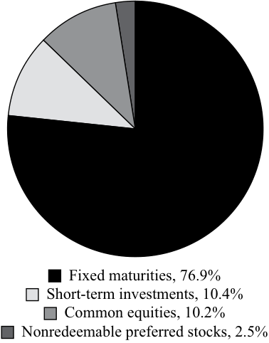

Learning Module 4 Basics of Portfolio Planning and Construction - Part 1: Introduction
Volume 9: Portfolio Management
Learning Module 4 Basics of Portfolio Planning and Construction
Part 1/3: Introduction (PDF Pages 169–184)
Tập 9: Quản lý Danh mục Đầu tư (Portfolio Management)
Học phần 4: Cơ bản về Lập kế hoạch và Xây dựng Danh mục Đầu tư (Basics of Portfolio Planning and Construction)
Phần 1/3: Giới thiệu (Introduction) (Trang PDF 169–184)
L E A R N I N G M O D U L E 4
H Ọ C P H Ầ N (L E A R N I N G M O D U L E) 4
Basics of Portfolio Planning and Construction
Cơ bản về Lập kế hoạch và Xây dựng Danh mục Đầu tư (Basics of Portfolio Planning and Construction)
by Alistair Byrne, PhD, CFA, and Frank E. Smudde, MSc, CFA.
bởi Alistair Byrne, PhD, CFA, và Frank E. Smudde, MSc, CFA.
Alistair Byrne, PhD, CFA, is at State Street Global Advisors (United Kingdom). Frank E. Smudde, MSc, CFA, is at APG Asset Management (Netherlands).
Alistair Byrne, PhD, CFA, làm việc tại State Street Global Advisors (Vương quốc Anh). Frank E. Smudde, MSc, CFA, làm việc tại APG Asset Management (Hà Lan).
LEARNING OUTCOMES
MỤC TIÊU HỌC TẬP (LEARNING OUTCOMES)
Mastery The candidate should be able to: describe the reasons for a written investment policy statement (IPS) describe the major components of an IPS describe risk and return objectives and how they may be developed for a client explain the difference between the willingness and the ability (capacity) to take risk in analyzing an investor’s financial risk tolerance describe the investment constraints of liquidity, time horizon, tax concerns, legal and regulatory factors, and unique circumstances and their implications for the choice of portfolio assets explain the specification of asset classes in relation to asset allocation describe the principles of portfolio construction and the role of asset allocation in relation to the IPS describe how environmental, social, and governance (ESG) considerations may be integrated into portfolio planning and construction
| Mức độ thành thạo | Ứng viên cần có khả năng: |
|---|---|
| mô tả các lý do cần có một bản tuyên bố chính sách đầu tư (investment policy statement – IPS) bằng văn bản | |
| mô tả các thành phần chính của một bản IPS | |
| mô tả các mục tiêu rủi ro và tỷ suất sinh lợi (risk and return objectives) cũng như cách thức xây dựng chúng cho một khách hàng | |
| giải thích sự khác biệt giữa mức độ sẵn lòng (willingness) và khả năng (ability/capacity) chấp nhận rủi ro khi phân tích mức độ chấp nhận rủi ro tài chính (financial risk tolerance) của một nhà đầu tư | |
| mô tả các ràng buộc đầu tư (investment constraints) về thanh khoản (liquidity), thời hạn đầu tư (time horizon), các vấn đề về thuế (tax concerns), các yếu tố pháp lý và quy định (legal and regulatory factors), cùng các hoàn cảnh đặc thù (unique circumstances) và hàm ý của chúng đối với việc lựa chọn tài sản trong danh mục đầu tư | |
| giải thích việc xác định các loại tài sản (specification of asset classes) trong mối liên hệ với phân bổ tài sản (asset allocation) | |
| mô tả các nguyên tắc xây dựng danh mục đầu tư (principles of portfolio construction) và vai trò của phân bổ tài sản trong mối liên hệ với IPS | |
| mô tả cách thức tích hợp các yếu tố môi trường, xã hội và quản trị (environmental, social, and governance – ESG) vào việc lập kế hoạch và xây dựng danh mục đầu tư |
CFA Institute would like to thank Hardik Sanjay Shah, CFA, for his contributions to the 2022 update of this reading.
Viện CFA (CFA Institute) xin gửi lời cảm ơn tới Hardik Sanjay Shah, CFA, vì những đóng góp của ông cho bản cập nhật năm 2022 của bài đọc này.
1
1
INTRODUCTION
GIỚI THIỆU (INTRODUCTION)
To build a suitable portfolio for a client, investment advisers should first seek to understand the client’s investment goals, resources, circumstances, and constraints. Investors can be categorized into broad groups based on shared characteristics with respect to these factors (e.g., various types of individual investors and institutional investors). Even investors within a given type, however, will invariably have a number of distinctive requirements. In this reading, we consider in detail the planning for investment success based on an individualized understanding of the client.
Để xây dựng một danh mục đầu tư phù hợp cho một khách hàng, trước tiên các cố vấn đầu tư (investment advisers) cần tìm hiểu các mục tiêu đầu tư, nguồn lực, hoàn cảnh và các ràng buộc của khách hàng đó. Các nhà đầu tư có thể được phân loại thành những nhóm lớn dựa trên các đặc điểm chung liên quan đến những yếu tố này (ví dụ: các loại hình nhà đầu tư cá nhân và nhà đầu tư tổ chức khác nhau). Tuy nhiên, ngay cả những nhà đầu tư trong cùng một loại hình nhất định cũng sẽ luôn có một số yêu cầu riêng biệt. Trong bài đọc này, chúng ta sẽ xem xét chi tiết việc lập kế hoạch hướng tới sự thành công trong đầu tư dựa trên sự thấu hiểu mang tính cá nhân hóa đối với từng khách hàng.
This reading is organized as follows: Section 2 discusses the investment policy statement, a written document that captures the client’s investment objectives and the constraints. Section 3 discusses the portfolio construction process, including the first step of specifying a strategic asset allocation for the client. Section 4 concludes and summarizes the reading.
Bài đọc này được bố cục như sau: Phần 2 thảo luận về bản tuyên bố chính sách đầu tư (investment policy statement – IPS), một tài liệu bằng văn bản ghi nhận các mục tiêu và ràng buộc đầu tư của khách hàng. Phần 3 thảo luận về quy trình xây dựng danh mục đầu tư (portfolio construction process), bao gồm bước đầu tiên là xác định phân bổ tài sản chiến lược (strategic asset allocation) cho khách hàng. Phần 4 kết luận và tóm tắt bài đọc.
2
2
THE INVESTMENT POLICY STATEMENT
BẢN TUYÊN BỐ CHÍNH SÁCH ĐẦU TƯ (THE INVESTMENT POLICY STATEMENT)
describe the reasons for a written investment policy statement (IPS) describe the major components of an IPS
mô tả các lý do cần có một bản tuyên bố chính sách đầu tư (IPS) bằng văn bản; mô tả các thành phần chính của một bản IPS
Portfolio planning can be defined as a program developed in advance of constructing a portfolio that is expected to define the client’s investment objectives. The written document governing this process is the investment policy statement (IPS). The IPS is sometimes complemented by a document outlining policy on responsible investing— the broadest (umbrella) term used to describe principles that typically address one or more environmental, social, and governance themes that an investor requires to be considered when evaluating whether to invest in a particular company, as well as during the period of ownership. Sustainable investing, a term used in a similar context to responsible investing, focuses on factoring in sustainability issues during the investment process. Policies on responsible investing may also be integrated within the IPS itself. In the remainder of this reading, the integration of responsible investing within the IPS will be our working assumption.
Lập kế hoạch danh mục đầu tư (Portfolio planning) có thể được định nghĩa là một chương trình được phát triển trước khi xây dựng một danh mục đầu tư nhằm xác định rõ các mục tiêu đầu tư của khách hàng. Tài liệu bằng văn bản điều chỉnh quy trình này là bản tuyên bố chính sách đầu tư (investment policy statement – IPS). Bản IPS đôi khi được bổ sung bởi một tài liệu phác thảo chính sách về đầu tư có trách nhiệm (responsible investing)—thuật ngữ rộng nhất (thuật ngữ bao trùm) được sử dụng để mô tả các nguyên tắc thường giải quyết một hoặc nhiều chủ đề về môi trường, xã hội và quản trị (ESG) mà một nhà đầu tư yêu cầu phải được xem xét khi đánh giá có nên đầu tư vào một công ty cụ thể hay không, cũng như trong suốt thời gian nắm giữ quyền sở hữu. Đầu tư bền vững (sustainable investing), một thuật ngữ được sử dụng trong ngữ cảnh tương tự như đầu tư có trách nhiệm, tập trung vào việc đưa các vấn đề phát triển bền vững vào trong quy trình đầu tư. Các chính sách về đầu tư có trách nhiệm cũng có thể được tích hợp ngay trong chính bản IPS. Trong phần còn lại của bài đọc này, việc tích hợp đầu tư có trách nhiệm vào trong IPS sẽ là giả định làm việc của chúng ta.
The Investment Policy Statement
Bản Tuyên bố Chính sách Đầu tư (The Investment Policy Statement)
The IPS is the starting point of the portfolio management process. Without a full understanding of the client’s situation and requirements, it is unlikely that successful results will be achieved. “Success” can be defined as a client achieving his important investment goals using means that he is comfortable with (in terms of risks taken and other concerns). The IPS essentially communicates a plan for achieving investment success.
IPS là điểm khởi đầu của quy trình quản lý danh mục đầu tư. Nếu không có sự hiểu biết đầy đủ về tình hình và các yêu cầu của khách hàng, sẽ rất khó có thể đạt được những kết quả thành công. “Thành công (Success)” có thể được định nghĩa là việc khách hàng đạt được các mục tiêu đầu tư quan trọng của mình bằng những phương tiện mà họ cảm thấy thoải mái (xét về mặt rủi ro phải gánh chịu và các mối quan tâm khác). Về bản chất, IPS truyền tải một kế hoạch để đạt được thành công trong đầu tư.
The IPS is typically developed following a fact-finding discussion with the client. This discussion can include the use of a questionnaire designed to articulate the client’s risk tolerance as well as address expectations in connection with specific circumstances. In the case of institutional clients, the fact finding may involve asset–liability management reviews, identification of liquidity needs, and a wide range of tax, legal, and other considerations.
IPS thường được xây dựng sau một cuộc thảo luận thu thập thông tin thực tế (fact-finding discussion) với khách hàng. Cuộc thảo luận này có thể bao gồm việc sử dụng một bảng câu hỏi khảo sát được thiết kế để làm rõ mức độ chấp nhận rủi ro (risk tolerance) của khách hàng cũng như giải quyết các kỳ vọng liên quan đến những hoàn cảnh cụ thể. Trong trường hợp khách hàng là tổ chức, việc thu thập thông tin thực tế có thể bao gồm các cuộc rà soát quản lý tài sản – nợ phải trả (asset–liability management reviews), xác định nhu cầu thanh khoản, và một loạt các cân nhắc về thuế, pháp lý cùng các yếu tố khác.
The IPS can take a variety of forms.1 A typical format will include the client’s investment objectives and the constraints that apply to the client’s portfolio.
Bản IPS có thể được trình bày dưới nhiều hình thức khác nhau.1 Một định dạng điển hình sẽ bao gồm các mục tiêu đầu tư của khách hàng và các ràng buộc áp dụng đối với danh mục đầu tư của khách hàng đó.
The client’s objectives are specified in terms of risk tolerance and return requirements. These elements must be consistent with each other: a client is unlikely to be able to find a portfolio that offers a relatively high expected return without taking on a relatively high level of expected risk. As part of their financial planning, clients may specify specific spending goals, which need to be considered when setting risk tolerance and return requirements.
Các mục tiêu của khách hàng được quy định cụ thể dưới dạng mức độ chấp nhận rủi ro (risk tolerance) và các yêu cầu về tỷ suất sinh lợi (return requirements). Các yếu tố này phải nhất quán với nhau: một khách hàng khó có thể tìm thấy một danh mục đầu tư mang lại tỷ suất sinh lợi kỳ vọng tương đối cao mà không phải gánh chịu một mức độ rủi ro kỳ vọng tương đối cao. Như một phần trong kế hoạch tài chính của mình, khách hàng có thể chỉ định các mục tiêu chi tiêu cụ thể, và những mục tiêu này cần phải được xem xét khi thiết lập mức độ chấp nhận rủi ro và yêu cầu về tỷ suất sinh lợi.
The constraints section covers factors that need to be taken into account when constructing a portfolio for the client that meets the objectives. The typical categories are liquidity requirements, time horizon, regulatory requirements, tax status, and unique needs. The constraints may be either internal (i.e., set by the client) or external (i.e., set by law or regulation), as we discuss in detail later.
Phần các ràng buộc (constraints section) bao gồm những yếu tố cần được tính đến khi xây dựng một danh mục đầu tư cho khách hàng nhằm đáp ứng các mục tiêu đã đề ra. Các nhóm ràng buộc điển hình là yêu cầu thanh khoản (liquidity requirements), thời hạn đầu tư (time horizon), yêu cầu pháp lý và quy định (regulatory requirements), tình trạng thuế (tax status), và các nhu cầu đặc thù (unique needs). Các ràng buộc có thể là nội bộ (tức là do khách hàng tự đặt ra) hoặc bên ngoài (tức là do luật pháp hoặc quy định đặt ra), như chúng ta sẽ thảo luận chi tiết ở phần sau.
Having a well-constructed IPS for all clients should be standard procedure for an investment manager. The investment manager should build the portfolio with reference to the IPS and be able to refer to it to assess a particular investment’s suitability for the client. In some cases, the need for the IPS goes beyond simply being a matter of standard procedure. In certain countries, the IPS (or an equivalent document) is a legal or regulatory requirement. For example, UK pension schemes must have a statement of investment principles under the Pensions Act 1995 (Section 35), and this statement is in essence an IPS. The UK Financial Services Authority also has requirements for investment firms to “know their customers.” The European Union’s Markets in Financial Instruments Directive (“MiFID”) requires firms to assign clients to categories (eligible counterparties, institutional clients, or retail clients), with the category type determining the types of protections and limitations relevant for the client by law.
Việc có một bản IPS được xây dựng tốt cho tất cả các khách hàng phải là quy trình chuẩn mực đối với một nhà quản lý đầu tư. Nhà quản lý đầu tư nên xây dựng danh mục đầu tư có tham chiếu đến IPS và có thể dựa vào đó để đánh giá mức độ phù hợp (suitability) của một khoản đầu tư cụ thể đối với khách hàng. Trong một số trường hợp, sự cần thiết của IPS vượt ra ngoài việc chỉ đơn thuần là một quy trình chuẩn mực. Tại một số quốc gia nhất định, IPS (hoặc một tài liệu tương đương) là một yêu cầu mang tính pháp lý hoặc quy định quản lý. Ví dụ, các chương trình hưu trí tại Vương quốc Anh phải có một bản tuyên bố về các nguyên tắc đầu tư (statement of investment principles) theo Đạo luật Hưu trí năm 1995 (Mục 35), và bản tuyên bố này về thực chất chính là một bản IPS. Cơ quan Dịch vụ Tài chính Vương quốc Anh (UK Financial Services Authority) cũng có các yêu cầu buộc các công ty đầu tư phải “hiểu rõ khách hàng của mình (know their customers).” Chỉ thị về Thị trường Công cụ Tài chính của Liên minh Châu Âu (“MiFID”) yêu cầu các công ty phải phân loại khách hàng vào các nhóm (đối tác đủ điều kiện – eligible counterparties, khách hàng tổ chức – institutional clients, hoặc khách hàng cá nhân/bán lẻ – retail clients), với loại nhóm khách hàng sẽ quyết định các hình thức bảo vệ và giới hạn có liên quan đến khách hàng đó theo quy định của pháp luật.
In the case of an institution, such as a pension plan or university endowment, the IPS may set out the governance arrangements that apply to the investment portfolio. For example, this information could cover the investment committee’s approach to appointing and reviewing investment managers for the portfolio, and the discretion that those managers have.
Trong trường hợp của một tổ chức, chẳng hạn như một quỹ hưu trí hoặc quỹ hiến tặng của trường đại học, IPS có thể quy định các cơ chế quản trị (governance arrangements) áp dụng cho danh mục đầu tư. Ví dụ, thông tin này có thể bao gồm cách tiếp cận của ủy ban đầu tư (investment committee) đối với việc bổ nhiệm và đánh giá các nhà quản lý đầu tư cho danh mục, cũng như quyền tự quyết (discretion) mà các nhà quản lý đó có được.
The IPS should be reviewed on a regular basis to ensure that it remains consistent with the client’s circumstances and requirements. For example, the UK Pensions Regulator suggests that a pension scheme’s statements of investment principles—a form of IPS—should be reviewed at least every three years. The IPS should also be reviewed if the manager becomes aware of a material change in the client’s circumstances, as well as on the initiative of the client when her objectives, time horizon, or liquidity needs change.
Bản IPS cần được rà soát định kỳ để đảm bảo rằng nó luôn nhất quán với hoàn cảnh và yêu cầu của khách hàng. Ví dụ, Cơ quan Quản lý Hưu trí Vương quốc Anh (UK Pensions Regulator) khuyến nghị rằng các bản tuyên bố về nguyên tắc đầu tư của một chương trình hưu trí—một dạng của IPS—nên được rà soát ít nhất ba năm một lần. Bản IPS cũng cần được xem xét lại nếu nhà quản lý nhận thấy có một sự thay đổi trọng yếu trong hoàn cảnh của khách hàng, cũng như theo chủ ý của khách hàng khi mục tiêu, thời hạn đầu tư, hoặc nhu cầu thanh khoản của họ thay đổi.
Major Components of an IPS
Các Thành phần Chính của một Bản IPS (Major Components of an IPS)
There is no single standard format for an IPS. Many IPS and investment governance documents with a similar purpose (as noted previously), however, include the following sections:
Không có một định dạng chuẩn mực duy nhất nào cho một bản IPS. Tuy nhiên, nhiều bản IPS và các tài liệu quản trị đầu tư có mục đích tương tự (như đã lưu ý trước đó) thường bao gồm các phần sau:
-
Introduction . This section describes the client.
-
Statement of Purpose . This section states the purpose of the IPS.
-
Giới thiệu (Introduction) . Phần này mô tả về khách hàng.
-
Tuyên bố về Mục đích (Statement of Purpose) . Phần này nêu rõ mục đích của bản IPS.
1 In this reading, an IPS is assumed to be a document governing investment management activities covering all or most of a client’s financial wealth. In many practical contexts, investment professionals work with investment mandates that cover only parts of a client’s wealth or financial risk. Governance documents such as “Limited Partnership Agreements” and “Investment Management Agreements” will govern such mandates. Their contents are to a large degree comparable to the contents of the IPS as described in this reading.
1 Trong bài đọc này, IPS được giả định là một tài liệu điều chỉnh các hoạt động quản lý đầu tư bao quát toàn bộ hoặc phần lớn tài sản tài chính của một khách hàng. Trong nhiều bối cảnh thực tế, các chuyên gia đầu tư làm việc với các hợp đồng ủy thác đầu tư (investment mandates) chỉ bao gồm một phần tài sản hoặc rủi ro tài chính của khách hàng. Các tài liệu quản trị như “Thỏa thuận Hợp danh Hữu hạn (Limited Partnership Agreements)” và “Thỏa thuận Quản lý Đầu tư (Investment Management Agreements)” sẽ điều chỉnh các ủy thác như vậy. Nội dung của chúng ở một mức độ lớn có thể so sánh với nội dung của bản IPS như được mô tả trong bài đọc này.
-
Statement of Duties and Responsibilities . This section details the duties and responsibilities of the client, the custodian of the client’s assets, and the investment managers.
-
Procedures . This section explains the steps to take to keep the IPS current and the procedures to follow to respond to various contingencies.
-
Investment Objectives . This section explains the client’s objectives in investing.
-
Investment Constraints . This section presents the factors that constrain the client in seeking to achieve the investment objectives.
-
Investment Guidelines . This section provides information about how policy should be executed (e.g., on the permissible use of leverage and derivatives) and on specific types of assets excluded from investment, if any.
-
Evaluation and Review . This section provides guidance on obtaining feedback on investment results.
-
Appendices : (A) Strategic Asset Allocation and (B) Rebalancing Policy. Many investors specify a strategic asset allocation (SAA), also known as the policy portfolio, which is the baseline allocation of portfolio assets to asset classes in view of the investor’s investment objectives and the investor’s policy with respect to rebalancing asset class weights. This SAA may include a statement of policy concerning hedging risks such as currency risk and interest rate risk.
-
Tuyên bố về Nghĩa vụ và Trách nhiệm (Statement of Duties and Responsibilities) . Phần này nêu chi tiết các nghĩa vụ và trách nhiệm của khách hàng, tổ chức lưu ký (custodian) tài sản của khách hàng, và các nhà quản lý đầu tư.
-
Quy trình thủ tục (Procedures) . Phần này giải thích các bước cần thực hiện để giữ cho bản IPS luôn được cập nhật và các quy trình cần tuân theo để ứng phó với các tình huống bất ngờ khác nhau.
-
Các Mục tiêu Đầu tư (Investment Objectives) . Phần này giải thích các mục tiêu của khách hàng khi đầu tư.
-
Các Ràng buộc Đầu tư (Investment Constraints) . Phần này trình bày các yếu tố giới hạn/ràng buộc khách hàng trong quá trình tìm cách đạt được các mục tiêu đầu tư.
-
Các Hướng dẫn Đầu tư (Investment Guidelines) . Phần này cung cấp thông tin về cách thức thực thi chính sách (ví dụ: về việc cho phép sử dụng đòn bẩy và công cụ phái sinh) và về các loại tài sản cụ thể bị loại trừ khỏi hoạt động đầu tư, nếu có.
-
Đánh giá và Rà soát (Evaluation and Review) . Phần này cung cấp hướng dẫn về việc thu nhận thông tin phản hồi đối với các kết quả đầu tư.
-
Các Phụ lục (Appendices) : (A) Phân bổ Tài sản Chiến lược (Strategic Asset Allocation) và (B) Chính sách Tái cân bằng (Rebalancing Policy). Nhiều nhà đầu tư chỉ định rõ một phân bổ tài sản chiến lược (strategic asset allocation – SAA), còn được gọi là danh mục đầu tư chính sách (policy portfolio), vốn là sự phân bổ cơ sở của các tài sản trong danh mục vào các loại tài sản xét theo các mục tiêu đầu tư của nhà đầu tư, cùng với chính sách của nhà đầu tư liên quan đến việc tái cân bằng tỷ trọng các loại tài sản. Bản SAA này có thể bao gồm một tuyên bố chính sách liên quan đến việc phòng vệ các rủi ro (hedging risks) như rủi ro tiền tệ và rủi ro lãi suất.
The sections that are most closely linked to the client’s distinctive needs, and probably the most important from a planning perspective, are those dealing with investment objectives and constraints. An IPS focusing on these two elements has been called an IPS in an “objectives and constraints” format.
Các phần có mối liên kết chặt chẽ nhất với những nhu cầu riêng biệt của khách hàng, và có lẽ là quan trọng nhất dưới góc độ lập kế hoạch, là những phần giải quyết các mục tiêu và ràng buộc đầu tư. Một bản IPS tập trung vào hai yếu tố này được gọi là một bản IPS theo định dạng “mục tiêu và ràng buộc (objectives and constraints format).”
In the following sections, we discuss the investment objectives and constraints format of an IPS beginning with risk and return objectives. The process of developing the IPS is the basic mechanism for evaluating and trying to improve an investor’s overall expected return–risk stance. In a portfolio context, return objectives and expectations must be tailored to be consistent with risk objectives. The risk and return objectives must also be consistent with the constraints that apply to the portfolio. A growing proportion of investors explicitly include non-financial considerations when formulating their investment policies. This approach is often referred to as responsible investing (discussed earlier alongside related terms), which reflects environmental, social, and governance (ESG) considerations. Responsible investing recognizes that ESG considerations may eventually affect the portfolio’s financial risk–return profile and may express the investor’s societal convictions. In this reading, we discuss responsible investing aspects of investment policy, where relevant.
Trong các phần tiếp theo, chúng tôi thảo luận về định dạng mục tiêu và ràng buộc đầu tư của một bản IPS, bắt đầu với các mục tiêu rủi ro và tỷ suất sinh lợi. Quy trình xây dựng IPS là cơ chế cơ bản để đánh giá và cố gắng cải thiện vị thế tỷ suất sinh lợi kỳ vọng – rủi ro tổng thể của một nhà đầu tư. Trong bối cảnh danh mục đầu tư, các mục tiêu và kỳ vọng về tỷ suất sinh lợi phải được thiết kế sao cho nhất quán với các mục tiêu rủi ro. Các mục tiêu rủi ro và tỷ suất sinh lợi cũng phải nhất quán với các ràng buộc áp dụng cho danh mục đầu tư. Một tỷ lệ ngày càng tăng các nhà đầu tư đưa một cách tường minh các cân nhắc phi tài chính vào khi xây dựng chính sách đầu tư của mình. Cách tiếp cận này thường được gọi là đầu tư có trách nhiệm (responsible investing, đã thảo luận trước đó cùng với các thuật ngữ liên quan), phản ánh các cân nhắc về môi trường, xã hội và quản trị (ESG). Đầu tư có trách nhiệm nhìn nhận rằng các cân nhắc ESG cuối cùng có thể ảnh hưởng đến hồ sơ rủi ro – lợi nhuận tài chính của danh mục đầu tư và có thể thể hiện các niềm tin xã hội của nhà đầu tư. Trong bài đọc này, chúng tôi thảo luận về các khía cạnh đầu tư có trách nhiệm của chính sách đầu tư ở những chỗ có liên quan.
3
3
IPS RISK AND RETURN OBJECTIVES
CÁC MỤC TIÊU RỦI RO VÀ TỶ SUẤT SINH LỢI TRONG IPS (IPS RISK AND RETURN OBJECTIVES)
-
describe the major components of an IPS
-
describe risk and return objectives and how they may be developed for a client
-
explain the difference between the willingness and the ability (capacity) to take risk in analyzing an investor’s financial risk tolerance
-
mô tả các thành phần chính của một bản IPS
-
mô tả các mục tiêu rủi ro và tỷ suất sinh lợi cũng như cách thức xây dựng chúng cho một khách hàng
-
giải thích sự khác biệt giữa mức độ sẵn lòng và khả năng chấp nhận rủi ro khi phân tích mức độ chấp nhận rủi ro tài chính của một nhà đầu tư
When constructing a portfolio for a client, it is important to ensure that the risk of the portfolio is suitable for the client. The IPS should state clearly the risk tolerance of the client. Risk objectives are specifications for portfolio risk that reflect the client’s risk tolerance. Quantitative risk objectives can be absolute, relative, or a combination of the two.
Khi xây dựng một danh mục đầu tư cho khách hàng, điều quan trọng là phải đảm bảo rằng rủi ro của danh mục đầu tư đó phù hợp với khách hàng. Bản IPS cần nêu rõ mức độ chấp nhận rủi ro (risk tolerance) của khách hàng. Các mục tiêu rủi ro (risk objectives) là những quy định cụ thể về rủi ro của danh mục đầu tư nhằm phản ánh mức độ chấp nhận rủi ro của khách hàng. Các mục tiêu rủi ro định lượng có thể mang tính tuyệt đối (absolute), tương đối (relative), hoặc kết hợp cả hai.
Examples of an absolute risk objective would be a desire not to suffer any loss of capital or not to lose more than a given percentage of capital in any 12-month period. Note that these objectives are unrelated to investment market performance, good or bad, and are absolute in the sense of being self-standing. The fulfillment of such objectives could be achieved by not taking any risk—for example, by investing in an insured bank certificate of deposit at a creditworthy bank. If investments in risky assets are undertaken, however, such statements could be restated as a probability statement to be more operational (i.e., practically useful). For example, the desire not to lose more than 4% of capital in any 12-month period might be restated as an objective that with 95% probability the portfolio not lose more than 4% in any 12-month period. Measures of absolute risk include the variance or standard deviation of returns and value at risk .2
Ví dụ về một mục tiêu rủi ro tuyệt đối (absolute risk objective) sẽ là mong muốn không phải chịu bất kỳ khoản tổn thất vốn nào hoặc không mất quá một tỷ lệ phần trăm vốn nhất định trong bất kỳ giai đoạn 12 tháng nào. Lưu ý rằng các mục tiêu này không liên quan đến hiệu quả hoạt động của thị trường đầu tư (dù tốt hay xấu) và mang tính tuyệt đối theo nghĩa tự thân độc lập. Việc hoàn thành các mục tiêu như vậy có thể đạt được bằng cách không chấp nhận bất kỳ rủi ro nào—ví dụ, bằng cách đầu tư vào một chứng chỉ tiền gửi ngân hàng được bảo hiểm tại một ngân hàng có uy tín tín dụng tốt. Tuy nhiên, nếu thực hiện đầu tư vào các tài sản có rủi ro, những tuyên bố như vậy có thể được diễn đạt lại dưới dạng một phát biểu xác suất (probability statement) để có tính khả thi cao hơn (tức là hữu ích hơn trên thực tế). Ví dụ, mong muốn không mất quá 4% vốn trong bất kỳ giai đoạn 12 tháng nào có thể được diễn đạt lại thành một mục tiêu rằng với xác suất 95%, danh mục đầu tư sẽ không mất quá 4% trong bất kỳ giai đoạn 12 tháng nào. Các thước đo rủi ro tuyệt đối bao gồm phương sai (variance) hoặc độ lệch chuẩn (standard deviation) của tỷ suất sinh lợi và giá trị có rủi ro (value at risk – VaR).2
Some clients may choose to express relative risk objectives, which relate risk relative to one or more benchmarks perceived to represent appropriate risk standards. For example, investments in large-cap UK equities could be benchmarked to an equity market index, such as the FTSE 100 Index. The S&P 500 Index could be used as a benchmark for large-cap US equities; for investments with cash-like characteristics, the benchmark could be an interest rate such as Treasury bill rate. For risk relative to a benchmark, the measure could be tracking risk , or tracking error .3 In practice, such risk objectives are used in situations where the total wealth management activities on behalf of a client are divided into partial mandates.
Một số khách hàng có thể chọn thể hiện các mục tiêu rủi ro tương đối (relative risk objectives), tức là liên hệ rủi ro trong tương quan với một hoặc nhiều tiêu chuẩn tham chiếu (benchmarks) được cho là đại diện cho các chuẩn mực rủi ro phù hợp. Ví dụ, các khoản đầu tư vào cổ phiếu vốn hóa lớn của Vương quốc Anh có thể được tham chiếu theo một chỉ số thị trường cổ phiếu, chẳng hạn như Chỉ số FTSE 100. Chỉ số S&P 500 có thể được sử dụng làm tiêu chuẩn tham chiếu cho các cổ phiếu vốn hóa lớn của Hoa Kỳ; đối với các khoản đầu tư có đặc tính giống tiền mặt, tiêu chuẩn tham chiếu có thể là một mức lãi suất chẳng hạn như lãi suất tín phiếu Kho bạc (Treasury bill rate). Đối với rủi ro tương đối so với một tiêu chuẩn tham chiếu, thước đo có thể là rủi ro bám sát (tracking risk), hay sai số bám sát (tracking error).3 Trên thực tế, các mục tiêu rủi ro như vậy được sử dụng trong những tình huống mà tổng thể các hoạt động quản lý gia sản thay mặt cho một khách hàng được chia nhỏ thành các hợp đồng ủy thác từng phần (partial mandates).
Other clients take both the investor’s assets and liabilities into consideration when establishing an IPS risk objective. In some cases where the size, timing and/ or relative certainty of future investor financial obligations are known, an IPS may be tailored to meet these objectives in what is called a liability-driven investment (LDI) approach. Examples of LDI include life insurance companies, defined benefit pension plans or an individual’s budget after retirement. For example, a pension plan must meet the pension payments as they come due, and the risk objective will be to minimize the probability that it will fail to do so. A related return objective might be to outperform the discount rate used in finding the present value of liabilities over a multi-year time horizon.
Những khách hàng khác lại tính đến cả tài sản và nợ phải trả của nhà đầu tư khi thiết lập mục tiêu rủi ro trong IPS. Trong một số trường hợp khi quy mô, thời điểm và/hoặc mức độ chắc chắn tương đối của các nghĩa vụ tài chính trong tương lai của nhà đầu tư đã được biết rõ, bản IPS có thể được thiết kế riêng để đáp ứng các mục tiêu này theo phương pháp được gọi là đầu tư định hướng theo nợ phải trả (liability-driven investment – LDI). Các ví dụ về LDI bao gồm các công ty bảo hiểm nhân thọ, các quỹ hưu trí phúc lợi xác định (DB) hoặc ngân sách của một cá nhân sau khi nghỉ hưu. Ví dụ, một quỹ hưu trí phải đáp ứng các khoản chi trả lương hưu khi chúng đến hạn, và mục tiêu rủi ro sẽ là tối thiểu hóa xác suất quỹ không thực hiện được điều đó. Một mục tiêu tỷ suất sinh lợi có liên quan có thể là đạt hiệu quả vượt trội so với lãi suất chiết khấu (discount rate) được sử dụng khi tính giá trị hiện tại của các khoản nợ phải trả trong một khung thời gian nhiều năm.
When a policy portfolio (that is, a specified set of long-term asset class weightings and hedge ratios) is used, the risk objective may be expressed as a desire for the portfolio return to be within a band of plus or minus X% of the benchmark return calculated by assigning an index or benchmark to represent each asset class present in the policy portfolio. Again, this objective may be more usefully interpreted as a statement of probability—for example, a 95% probability that the portfolio return will be within X% of the benchmark return over a stated period. Example 1 reviews this material.
Khi một danh mục đầu tư chính sách (policy portfolio – tức là một tập hợp được chỉ định gồm các tỷ trọng loại tài sản dài hạn và các tỷ lệ phòng vệ rủi ro) được sử dụng, mục tiêu rủi ro có thể được diễn đạt như một mong muốn rằng tỷ suất sinh lợi của danh mục đầu tư sẽ nằm trong một biên độ cộng hoặc trừ $X\%$ so với tỷ suất sinh lợi của tiêu chuẩn tham chiếu được tính bằng cách gán một chỉ số hoặc tiêu chuẩn tham chiếu đại diện cho từng loại tài sản hiện diện trong danh mục chính sách. Một lần nữa, mục tiêu này có thể được diễn giải một cách hữu ích hơn dưới dạng một phát biểu xác suất—ví dụ: xác suất 95% là tỷ suất sinh lợi của danh mục sẽ nằm trong phạm vi $X\%$ so với tỷ suất sinh lợi của tiêu chuẩn tham chiếu trong một khoảng thời gian xác định. Ví dụ 1 ôn tập lại nội dung này.
2 Value at risk is a money measure of the minimum value of losses expected during a specified period at a given level of probability.
2 Giá trị có rủi ro (Value at risk – VaR) là một thước đo bằng tiền về giá trị tổn thất tối thiểu dự kiến trong một khoảng thời gian xác định ở một mức xác suất cho trước.
3 Tracking risk (sometimes called tracking error ) is the standard deviation of the differences between a portfolio’s returns and its benchmark’s returns.
3 Rủi ro bám sát (Tracking risk) (đôi khi được gọi là sai số bám sát – tracking error) là độ lệch chuẩn của các khoản chênh lệch giữa tỷ suất sinh lợi của danh mục đầu tư và tỷ suất sinh lợi của tiêu chuẩn tham chiếu (benchmark) của nó.
EXAMPLE 1
VÍ DỤ 1
Types of Risk Objectives
Các Loại Mục tiêu Rủi ro (Types of Risk Objectives)
A Japanese institutional investor has a portfolio valued at ¥10 billion. The investor expresses her first risk objective as a desire not to lose more than ¥1 billion in the coming 12-month period. She specifies a second risk objective of achieving returns within 4% of the return to the TOPIX stock market index, which is her benchmark. Based on this information, address the following:
Một nhà đầu tư tổ chức Nhật Bản có một danh mục đầu tư trị giá 10 tỷ Yên ($\text{¥10 billion}$). Nhà đầu tư này diễn đạt mục tiêu rủi ro đầu tiên của mình là mong muốn không bị lỗ quá 1 tỷ Yên trong giai đoạn 12 tháng tới. Bà chỉ định mục tiêu rủi ro thứ hai là đạt được tỷ suất sinh lợi nằm trong phạm vi 4% so với tỷ suất sinh lợi của chỉ số thị trường chứng khoán TOPIX, vốn là tiêu chuẩn tham chiếu của bà. Dựa trên thông tin này, hãy giải quyết các yêu cầu sau:
1.
1.
-
a. Characterize the first risk objective as absolute or relative.
-
b. Give an example of how the risk objective could be restated in a practical manner.
-
Solution
-
a. This is an absolute risk objective.
-
b. This risk objective could be restated in a practical manner by specifying that the 12-month 95% value at risk of the portfolio must be no more than ¥1 billion.
-
a. Hãy phân loại mục tiêu rủi ro đầu tiên là tuyệt đối hay tương đối.
-
b. Đưa ra một ví dụ về cách thức diễn đạt lại mục tiêu rủi ro này một cách thiết thực.
-
Lời giải
-
a. Đây là một mục tiêu rủi ro tuyệt đối (absolute risk objective).
-
b. Mục tiêu rủi ro này có thể được diễn đạt lại một cách thiết thực bằng cách quy định rằng giá trị có rủi ro (VaR) ở mức độ tin cậy 95% trong 12 tháng của danh mục đầu tư không được vượt quá 1 tỷ Yên.
2.
2.
-
a. Characterize the second risk objective as absolute or relative.
-
b. Identify a measure for quantifying the risk objective.
-
Solution
-
a. This is a relative risk objective.
-
b. This risk objective could be quantified using the tracking risk as a measure. For example, assuming returns follow a normal distribution, an expected tracking risk of 2% would imply a return within 4% of the index return approximately 95% of the time. Remember that tracking risk is stated as a one standard deviation measure.
-
a. Hãy phân loại mục tiêu rủi ro thứ hai là tuyệt đối hay tương đối.
-
b. Xác định một thước đo để lượng hóa mục tiêu rủi ro này.
-
Lời giải
-
a. Đây là một mục tiêu rủi ro tương đối (relative risk objective).
-
b. Mục tiêu rủi ro này có thể được lượng hóa bằng cách sử dụng rủi ro bám sát (tracking risk) làm thước đo. Ví dụ, giả sử tỷ suất sinh lợi tuân theo phân phối chuẩn, một mức rủi ro bám sát kỳ vọng là 2% sẽ hàm ý tỷ suất sinh lợi nằm trong phạm vi 4% ($\pm 2$ độ lệch chuẩn) so với tỷ suất sinh lợi của chỉ số trong khoảng 95% thời gian. Hãy nhớ rằng rủi ro bám sát được biểu thị dưới dạng thước đo một độ lệch chuẩn.
A client’s overall risk tolerance is a function of the client’s ability to bear (accept) risk and her “risk attitude,” which might be considered as the client’s willingness to take risk. For ease of expression, from this point on we will refer to ability to bear risk and willingness to take risk as the two components of risk tolerance. Above-average ability to bear risk and above-average willingness to take risk imply above-average risk tolerance. Below-average ability to bear risk and below-average willingness to take risk imply below-average risk tolerance. These interactions are shown in Exhibit 1.
Mức độ chấp nhận rủi ro tổng thể (overall risk tolerance) của một khách hàng là một hàm số phụ thuộc vào khả năng gánh chịu (chấp nhận) rủi ro (ability to bear risk) của khách hàng và “thái độ đối với rủi ro (risk attitude)” của người đó, vốn có thể được coi là mức độ sẵn lòng chấp nhận rủi ro (willingness to take risk) của khách hàng. Để thuận tiện cho việc diễn đạt, từ thời điểm này trở đi chúng ta sẽ gọi khả năng chịu đựng rủi ro (ability to bear risk) và mức độ sẵn lòng chấp nhận rủi ro (willingness to take risk) là hai thành phần của mức độ chấp nhận rủi ro (risk tolerance). Khả năng chịu đựng rủi ro trên mức trung bình và mức độ sẵn lòng chấp nhận rủi ro trên mức trung bình hàm ý mức độ chấp nhận rủi ro trên mức trung bình. Khả năng chịu đựng rủi ro dưới mức trung bình và mức độ sẵn lòng chấp nhận rủi ro dưới mức trung bình hàm ý mức độ chấp nhận rủi ro dưới mức trung bình. Những sự tương tác này được trình bày trong Bảng minh họa 1.
Exhibit 1: Risk Tolerance
Bảng minh họa 1: Mức độ Chấp nhận Rủi ro (Risk Tolerance)
| Ability to Bear Risk | |
|---|---|
| Willingness to Take Risk | Below Average Above Average |
| Below Average | Below-average risk tolerance Resolution needed |
| Above Average | Resolution needed Above-average risk tolerance |
| Khả năng Chịu đựng Rủi ro (Ability to Bear Risk) | ||
|---|---|---|
| Mức độ Sẵn lòng Chấp nhận Rủi ro (Willingness to Take Risk) | Dưới mức trung bình (Below Average) | Trên mức trung bình (Above Average) |
| Dưới mức trung bình (Below Average) | Mức độ chấp nhận rủi ro dưới trung bình (Below-average risk tolerance) | Cần giải quyết mâu thuẫn (Resolution needed) |
| Trên mức trung bình (Above Average) | Cần giải quyết mâu thuẫn (Resolution needed) | Mức độ chấp nhận rủi ro trên trung bình (Above-average risk tolerance) |
The ability to bear risk is measured mainly in terms of objective factors, such as time horizon, expected income, and level of wealth relative to liabilities. For example, an investor with a 20-year time horizon can be considered to have a greater ability
Khả năng (ability) chịu đựng rủi ro được đo lường chủ yếu dựa trên các yếu tố khách quan (objective factors), chẳng hạn như thời hạn đầu tư (time horizon), thu nhập kỳ vọng (expected income), và mức độ giàu có tương đối so với các khoản nợ phải trả (level of wealth relative to liabilities). Ví dụ, một nhà đầu tư có thời hạn đầu tư 20 năm có thể được coi là có khả năng
to bear risk, other things being equal, than an investor with a 2-year horizon. This difference is because over 20 years, there is more scope for losses to be recovered or other adjustments made to circumstances than there is over 2 years.
chịu đựng rủi ro lớn hơn, khi các yếu tố khác không đổi, so với một nhà đầu tư có thời hạn 2 năm. Sự khác biệt này là do trong vòng 20 năm, có nhiều dư địa hơn để phục hồi các khoản thua lỗ hoặc thực hiện các điều chỉnh khác đối với hoàn cảnh so với trong vòng 2 năm.
Similarly, an investor whose assets are comfortably in excess of their liabilities has more ability to bear risk than an investor whose wealth and expected future expenditure are more closely balanced. For example, a wealthy individual who can sustain a comfortable lifestyle after a very substantial investment loss has a relatively high ability to bear risk. A pension plan that has a large surplus of assets over liabilities has a relatively high ability to bear risk.
Tương tự, một nhà đầu tư có tài sản vượt xa một cách thoải mái so với các khoản nợ phải trả của họ sẽ có nhiều khả năng chịu đựng rủi ro hơn so với một nhà đầu tư có tài sản và chi tiêu dự kiến trong tương lai cân bằng sát sao hơn. Ví dụ, một cá nhân giàu có vẫn có thể duy trì một lối sống thoải mái sau một khoản thua lỗ đầu tư rất lớn sẽ có khả năng chịu đựng rủi ro tương đối cao. Một quỹ hưu trí có khoản thặng dư tài sản lớn so với nợ phải trả sẽ có khả năng chịu đựng rủi ro tương đối cao.
The willingness to take risk, or risk attitude, is a more subjective factor based on the client’s psychology and perhaps also his current circumstances. Although the list of factors related to an individual’s risk attitude remains open to debate, it is believed that some psychological factors, such as personality type, self-esteem, and inclination to independent thinking, are correlated with risk attitude. Some individuals are comfortable taking financial and investment risk, whereas others find it distressing. Although there is no single agreed-upon method for measuring risk tolerance, a willingness to take risk may be gauged by discussing risk with the client or by asking the client to complete a psychometric questionnaire. For example, financial planning academic John Grable and collaborators have developed 13-item and 5-item risk attitude questionnaires that have undergone some level of technical validation. The five-item questionnaire is shown in Exhibit 2.
Mức độ sẵn lòng (willingness) chấp nhận rủi ro, hay thái độ đối với rủi ro (risk attitude), là một yếu tố mang tính chủ quan (subjective factor) hơn, dựa trên tâm lý của khách hàng và có lẽ cả hoàn cảnh hiện tại của người đó. Mặc dù danh sách các yếu tố liên quan đến thái độ rủi ro của một cá nhân vẫn còn để ngỏ cho các cuộc tranh luận, người ta tin rằng một số yếu tố tâm lý, chẳng hạn như kiểu tính cách, lòng tự trọng và khuynh hướng tư duy độc lập, có tương quan với thái độ đối với rủi ro. Một số cá nhân cảm thấy thoải mái khi chấp nhận rủi ro tài chính và đầu tư, trong khi những người khác lại cảm thấy điều đó gây căng thẳng lo âu. Mặc dù không có một phương pháp thống nhất duy nhất nào để đo lường mức độ chấp nhận rủi ro, nhưng mức độ sẵn lòng chấp nhận rủi ro có thể được đánh giá bằng cách thảo luận về rủi ro với khách hàng hoặc bằng cách yêu cầu khách hàng hoàn thành một bảng câu hỏi trắc nghiệm tâm lý (psychometric questionnaire). Ví dụ, học giả về lập kế hoạch tài chính John Grable và các cộng sự đã phát triển các bảng câu hỏi đánh giá thái độ rủi ro gồm 13 mục và 5 mục đã trải qua một số mức độ kiểm chứng kỹ thuật. Bảng câu hỏi gồm năm mục được trình bày trong Bảng minh họa 2.
Exhibit 2: A Five-Item Risk Assessment Instrument
Bảng minh họa 2: Công cụ Đánh giá Rủi ro Gồm Năm Mục (A Five-Item Risk Assessment Instrument)
1. Investing is too difficult to understand.
1. Đầu tư là việc quá khó để hiểu được.
-
a. Strongly agree
-
b. Tend to agree
-
c. Tend to disagree
-
d. Strongly disagree
-
a. Hoàn toàn đồng ý (Strongly agree)
-
b. Có xu hướng đồng ý (Tend to agree)
-
c. Có xu hướng không đồng ý (Tend to disagree)
-
d. Hoàn toàn không đồng ý (Strongly disagree)
2. I am more comfortable putting my money in a bank account than in the stock market.
2. Tôi cảm thấy thoải mái khi gửi tiền vào tài khoản ngân hàng hơn là đầu tư vào thị trường chứng khoán.
-
a. Strongly agree
-
b. Tend to agree
-
c. Tend to disagree
-
d. Strongly disagree
-
a. Hoàn toàn đồng ý
-
b. Có xu hướng đồng ý
-
c. Có xu hướng không đồng ý
-
d. Hoàn toàn không đồng ý
3. When I think of the word “risk,” the term “loss” comes to mind immediately.
3. Khi tôi nghĩ đến từ “rủi ro”, thuật ngữ “thua lỗ” lập tức xuất hiện trong tâm trí tôi.
-
a. Strongly agree
-
b. Tend to agree
-
c. Tend to disagree
-
d. Strongly disagree
-
a. Hoàn toàn đồng ý
-
b. Có xu hướng đồng ý
-
c. Có xu hướng không đồng ý
-
d. Hoàn toàn không đồng ý
4. Making money in stocks and bonds is based on luck.
4. Kiếm tiền từ cổ phiếu và trái phiếu là dựa vào sự may mắn.
-
a. Strongly agree
-
b. Tend to agree
-
c. Tend to disagree
-
d. Strongly disagree
-
a. Hoàn toàn đồng ý
-
b. Có xu hướng đồng ý
-
c. Có xu hướng không đồng ý
-
d. Hoàn toàn không đồng ý
5. In terms of investing, safety is more important than returns.
5. Trong đầu tư, sự an toàn quan trọng hơn tỷ suất sinh lợi.
- a. Strongly agree
- a. Hoàn toàn đồng ý
-
b. Tend to agree
-
c. Tend to disagree
-
d. Strongly disagree
-
b. Có xu hướng đồng ý
-
c. Có xu hướng không đồng ý
-
d. Hoàn toàn không đồng ý
Source: Grable and Joo (2004).
Nguồn: Grable và Joo (2004).
The responses, a), b), c), and d), are coded 1, 2, 3, and 4, respectively, and summed. The lowest score is 5 and the highest score is 20, with higher scores indicating greater risk tolerance. For two random samples drawn from the faculty and staff of large US universities ( n = 406), the mean score was 12.86 with a standard deviation of 3.01 and a median score (i.e., the middle score) of 13.
Các câu trả lời a), b), c), và d) được mã hóa lần lượt thành 1, 2, 3, và 4 điểm, sau đó được cộng tổng lại. Điểm số thấp nhất là 5 và điểm số cao nhất là 20, với điểm số cao hơn cho thấy mức độ chấp nhận rủi ro lớn hơn. Đối với hai mẫu ngẫu nhiên được rút ra từ đội ngũ giảng viên và nhân viên của các trường đại học lớn tại Hoa Kỳ ($n = 406$), điểm số trung bình là 12,86 với độ lệch chuẩn là 3,01 và điểm trung vị (tức là điểm ở chính giữa) là 13.
Note that a question, such as the first one in Exhibit 2, indicates that risk attitude may be associated with non-psychological factors (such as level of financial knowledge and understanding and decision-making style) as well as psychological factors.
Lưu ý rằng một câu hỏi, chẳng hạn như câu hỏi đầu tiên trong Bảng minh họa 2, cho thấy thái độ đối với rủi ro có thể gắn liền với các yếu tố phi tâm lý (chẳng hạn như mức độ kiến thức và hiểu biết về tài chính cũng như phong cách ra quyết định) bên cạnh các yếu tố tâm lý.
The adviser needs to examine whether a client’s ability to accept risk is consistent with the client’s willingness to take risk. For example, a wealthy investor with a 20-year time horizon, who is thus able to take risk, may also be comfortable taking risk; in this case the factors are consistent. If the wealthy investor has a low willingness to take risk, there would be a conflict.
Cố vấn cần kiểm tra xem liệu khả năng chấp nhận rủi ro của khách hàng có nhất quán với mức độ sẵn lòng chấp nhận rủi ro của khách hàng đó hay không. Ví dụ, một nhà đầu tư giàu có với thời hạn đầu tư 20 năm, do đó có khả năng chấp nhận rủi ro, cũng có thể cảm thấy thoải mái khi chấp nhận rủi ro; trong trường hợp này, hai yếu tố là nhất quán với nhau. Nếu nhà đầu tư giàu có đó lại có mức độ sẵn lòng chấp nhận rủi ro thấp, sẽ xảy ra sự mâu thuẫn (conflict).
The conflict between ability and willingness to take risk can also arise in the institutional context. In addition, different stakeholders within the institution may take different views. For example, the trustees of a well-funded pension plan may desire a low-risk approach to safeguard the funding of the scheme and beneficiaries of the scheme may take a similar view. The sponsor, however, may wish a higher-risk/ higher-return approach in an attempt to reduce future funding costs. When a trustee bears a fiduciary responsibility to pension beneficiaries and the interests of the pension sponsor and the pension beneficiaries conflict, the trustee should act in the best interests of the beneficiaries.
Sự mâu thuẫn giữa khả năng và mức độ sẵn lòng chấp nhận rủi ro cũng có thể phát sinh trong bối cảnh tổ chức. Ngoài ra, các bên liên quan (stakeholders) khác nhau trong cùng một tổ chức có thể có những quan điểm khác nhau. Ví dụ, các ủy viên quản trị (trustees) của một quỹ hưu trí được tài trợ tốt có thể mong muốn một cách tiếp cận rủi ro thấp để bảo vệ nguồn vốn tài trợ của chương trình, và những người thụ hưởng (beneficiaries) của chương trình có thể có cùng quan điểm như vậy. Tuy nhiên, công ty tài trợ (sponsor) có thể mong muốn một cách tiếp cận rủi ro cao hơn / tỷ suất sinh lợi cao hơn nhằm cố gắng giảm bớt chi phí đóng góp tài trợ trong tương lai. Khi một ủy viên quản trị mang trách nhiệm ủy thác (fiduciary responsibility) đối với những người thụ hưởng quỹ hưu trí và lợi ích của công ty tài trợ lương hưu mâu thuẫn với lợi ích của những người thụ hưởng lương hưu, ủy viên quản trị đó phải hành động vì lợi ích tốt nhất của những người thụ hưởng.
When both the ability and willingness to take risk are consistent, the investment adviser’s task is the simplest. When ability to take risk is below average and willingness to take risk is above average, the investor’s risk tolerance should be assessed as below average overall. When ability to take risk is above average but willingness is below average, the portfolio manager or adviser may seek to counsel the client and explain the conflict and its implications. For example, the adviser could outline the reasons why the client is considered to have a high ability to take risk and explain the likely consequences, in terms of reduced expected return, of not taking risk. The investment adviser, however, should not aim to change a client’s willingness to take risk that is not a result of a miscalculation or misperception. Modification of elements of personality is not within the purview of the investment adviser’s role. The prudent approach is to reach a conclusion about risk tolerance consistent with the lower of the two factors (ability and willingness) and to document the decisions made.
Khi cả khả năng và mức độ sẵn lòng chấp nhận rủi ro đều nhất quán với nhau, nhiệm vụ của cố vấn đầu tư là đơn giản nhất. Khi khả năng chấp nhận rủi ro ở dưới mức trung bình và mức độ sẵn lòng chấp nhận rủi ro ở trên mức trung bình, thì mức độ chấp nhận rủi ro tổng thể của nhà đầu tư cần được đánh giá là dưới mức trung bình. Khi khả năng chấp nhận rủi ro ở trên mức trung bình nhưng mức độ sẵn lòng lại ở dưới mức trung bình, nhà quản lý danh mục đầu tư hoặc cố vấn có thể tìm cách tư vấn cho khách hàng cũng như giải thích về sự mâu thuẫn đó và những hệ quả của nó. Ví dụ, cố vấn có thể phác thảo những lý do tại sao khách hàng được xem là có khả năng chấp nhận rủi ro cao và giải thích những hệ quả có thể xảy ra, xét về mặt làm giảm tỷ suất sinh lợi kỳ vọng, của việc không chấp nhận rủi ro. Tuy nhiên, cố vấn đầu tư không nên nhắm tới việc thay đổi mức độ sẵn lòng chấp nhận rủi ro của khách hàng nếu điều đó không bắt nguồn từ sự tính toán sai lầm hoặc nhận thức sai lệch. Việc sửa đổi các yếu tố thuộc về tính cách không nằm trong phạm vi vai trò của người cố vấn đầu tư. Cách tiếp cận thận trọng (prudent approach) là đi đến kết luận về mức độ chấp nhận rủi ro nhất quán với yếu tố thấp hơn trong hai yếu tố (khả năng và mức độ sẵn lòng) và lập hồ sơ ghi nhận lại các quyết định đã đưa ra.
Example 2 is the first of a set that follows the analysis of an investment client through the preparation of the major elements of an IPS.
Ví dụ 2 là ví dụ đầu tiên trong chuỗi các ví dụ theo dõi quá trình phân tích một khách hàng đầu tư xuyên suốt việc chuẩn bị các yếu tố chính của một bản IPS.
EXAMPLE 2
VÍ DỤ 2
The Case of Henri Gascon: Risk Tolerance
Trường hợp của Henri Gascon: Mức độ Chấp nhận Rủi ro (The Case of Henri Gascon: Risk Tolerance)
- Henri Gascon is an energy trader who works for a major French oil company based in Paris. He is 30 years old and married with one son, aged 5. Gascon has decided that it is time to review his financial situation and consults a financial adviser, who notes the following aspects of Gascon’s situation:
- Gascon’s annual salary of €250,000 is more than sufficient to cover the family’s outgoings.
- Henri Gascon là một nhà giao dịch năng lượng làm việc cho một công ty dầu khí lớn của Pháp có trụ sở tại Paris. Anh 30 tuổi, đã kết hôn và có một con trai 5 tuổi. Gascon quyết định rằng đã đến lúc cần xem xét lại tình hình tài chính của mình và tham vấn một cố vấn tài chính; người cố vấn ghi nhận các khía cạnh sau đây về tình hình của Gascon:
- Mức lương hàng năm 250.000 € của Gascon là dư dả để trang trải các khoản chi tiêu của gia đình.
-
Gascon owns his apartment outright and has €1,000,000 of savings.
-
Gascon perceives that his job is reasonably secure.
-
Gascon has a good knowledge of financial matters and is confident that equity markets will deliver positive returns over the long term.
-
In the risk tolerance questionnaire, Gascon strongly disagrees with the statements that “making money in stocks and bonds is based on luck” and “in terms of investing, safety is more important than returns.”
-
Gascon expects that most of his savings will be used to fund his retirement, which he hopes to start at age 50.
-
Gascon sở hữu hoàn toàn căn hộ của mình (không có nợ vay) và có 1.000.000 € tiền tiết kiệm.
-
Gascon nhận thấy công việc của mình tương đối an toàn ổn định.
-
Gascon có kiến thức tốt về các vấn đề tài chính và tự tin rằng các thị trường cổ phiếu sẽ mang lại tỷ suất sinh lợi dương trong dài hạn.
-
Trong bảng câu hỏi đánh giá mức độ chấp nhận rủi ro, Gascon hoàn toàn không đồng ý với các phát biểu rằng “kiếm tiền từ cổ phiếu và trái phiếu là dựa vào sự may mắn” và “trong đầu tư, sự an toàn quan trọng hơn tỷ suất sinh lợi.”
-
Gascon dự kiến rằng phần lớn tiền tiết kiệm của mình sẽ được sử dụng để tài trợ cho việc nghỉ hưu, mà anh hy vọng sẽ bắt đầu ở tuổi 50.
Based only on the information given, which of the following statements is most accurate?
Chỉ dựa trên những thông tin được cung cấp, phát biểu nào sau đây là chính xác nhất?
-
A. Gascon has a low ability to take risk but a high willingness to take risk. B. Gascon has a high ability to take risk but a low willingness to take risk.
-
C. Gascon has a high ability to take risk and a high willingness to take risk.
-
A. Gascon có khả năng chấp nhận rủi ro thấp nhưng mức độ sẵn lòng chấp nhận rủi ro cao.
-
B. Gascon có khả năng chấp nhận rủi ro cao nhưng mức độ sẵn lòng chấp nhận rủi ro thấp.
-
C. Gascon có khả năng chấp nhận rủi ro cao và mức độ sẵn lòng chấp nhận rủi ro cao.
Solution:
Lời giải:
C is correct. Gascon has a high income relative to outgoings, a high level of assets, a secure job, and a time horizon of 20 years. This information suggests a high ability to take risk. At the same time, Gascon is knowledgeable and confident about financial markets and responds to the questionnaire with answers that suggest risk tolerance. This result suggests he also has a high willingness to take risk.
C là đáp án đúng. Gascon có thu nhập cao so với các khoản chi tiêu, mức tài sản lớn, công việc ổn định, và thời hạn đầu tư 20 năm. Thông tin này cho thấy khả năng chấp nhận rủi ro cao. Đồng thời, Gascon là người am hiểu và tự tin về các thị trường tài chính, cũng như trả lời bảng câu hỏi với các đáp án thể hiện sự chấp nhận rủi ro. Kết quả này cho thấy anh cũng có mức độ sẵn lòng chấp nhận rủi ro cao.
EXAMPLE 3
VÍ DỤ 3
The Case of Jacques Gascon: Risk Tolerance
Trường hợp của Jacques Gascon: Mức độ Chấp nhận Rủi ro (The Case of Jacques Gascon: Risk Tolerance)
- Marie Gascon is so pleased with the services provided by her financial adviser that she suggests to her brother Jacques that he should also consult the adviser. Jacques thinks it is a good idea. Jacques, a self-employed computer consultant also based in Paris, is 40 years old and divorced with four children, aged between 12 and 16. The financial adviser notes the following aspects of Jacques’ situation:
-
Jacques’ consultancy earnings average €40,000 per annum but are quite volatile.
-
Jacques is required to pay €10,000 per year to his ex-wife and children.
-
Jacques has a mortgage on his apartment of €100,000 and €10,000 of savings.
-
Jacques has a good knowledge of financial matters and expects that equity markets will deliver very high returns over the long term.
-
In the risk tolerance questionnaire, Jacques strongly disagrees with the statements “I am more comfortable putting my money in a bank account than in the stock market” and “When I think of the word ‘risk’, the term ‘loss’ comes to mind immediately.”
- Marie Gascon hài lòng với các dịch vụ do cố vấn tài chính của cô cung cấp đến mức cô gợi ý cho anh trai mình là Jacques rằng anh cũng nên tham vấn người cố vấn này. Jacques cho rằng đó là một ý kiến hay. Jacques, một chuyên gia tư vấn máy tính tự doanh cũng sống tại Paris, 40 tuổi, đã ly hôn và có bốn người con trong độ tuổi từ 12 đến 16. Cố vấn tài chính ghi nhận các khía cạnh sau đây về tình hình của Jacques:
-
Thu nhập từ việc tư vấn của Jacques trung bình đạt 40.000 € mỗi năm nhưng biến động khá mạnh.
-
Jacques có nghĩa vụ phải chu cấp 10.000 € mỗi năm cho vợ cũ và các con của mình.
-
Jacques có một khoản vay thế chấp mua căn hộ trị giá 100.000 € và có 10.000 € tiền tiết kiệm.
-
Jacques có kiến thức tốt về các vấn đề tài chính và kỳ vọng rằng các thị trường cổ phiếu sẽ mang lại tỷ suất sinh lợi rất cao trong dài hạn.
-
Trong bảng câu hỏi đánh giá mức độ chấp nhận rủi ro, Jacques hoàn toàn không đồng ý với các phát biểu “Tôi cảm thấy thoải mái khi gửi tiền vào tài khoản ngân hàng hơn là đầu tư vào thị trường chứng khoán” và “Khi tôi nghĩ đến từ ‘rủi ro’, thuật ngữ ‘thua lỗ’ lập tức xuất hiện trong tâm trí tôi.”
- Jacques expects that most of his savings will be required to support his children at university.
- Jacques dự kiến rằng phần lớn số tiền tiết kiệm của mình sẽ cần được dùng để hỗ trợ các con học đại học.
Based only on the information given, which statement is correct?
Chỉ dựa trên những thông tin được cung cấp, phát biểu nào là đúng?
-
A. Jacques has a low ability to take risk but a high willingness to take risk.
-
B. Jacques has a high ability to take risk but a low willingness to take risk.
-
C. Jacques has a high ability to take risk and a high willingness to take risk.
-
A. Jacques có khả năng chấp nhận rủi ro thấp nhưng mức độ sẵn lòng chấp nhận rủi ro cao.
-
B. Jacques có khả năng chấp nhận rủi ro cao nhưng mức độ sẵn lòng chấp nhận rủi ro thấp.
-
C. Jacques có khả năng chấp nhận rủi ro cao và mức độ sẵn lòng chấp nhận rủi ro cao.
Solution:
Lời giải:
A is correct. Jacques does not have a particularly high income, his income is unstable, and he has reasonably high outgoings for his mortgage and maintenance payments. His investment time horizon is approximately two to six years given the ages of his children and his desire to support them at university. This finely balanced financial situation and short time horizon suggests a low ability to take risk. In contrast, his expectations for financial market returns and risk tolerance questionnaire answers suggest a high willingness to take risk. The financial adviser may wish to explain to Jacques how finely balanced his financial situation is and suggest that, despite his desire to take more risk, a relatively cautious portfolio might be the most appropriate approach to take.
A là đáp án đúng. Jacques không có mức thu nhập đặc biệt cao, thu nhập của anh không ổn định, và anh có các khoản chi tiêu tương đối lớn cho khoản vay thế chấp và tiền cấp dưỡng. Thời hạn đầu tư của anh chỉ vào khoảng hai đến sáu năm xét theo độ tuổi của các con và mong muốn hỗ trợ chúng học đại học. Tình hình tài chính cân bằng mong manh và thời hạn đầu tư ngắn này cho thấy khả năng chấp nhận rủi ro thấp. Ngược lại, kỳ vọng của anh về tỷ suất sinh lợi của thị trường tài chính và câu trả lời trong bảng khảo sát mức độ chấp nhận rủi ro lại cho thấy mức độ sẵn lòng chấp nhận rủi ro cao. Cố vấn tài chính có thể sẽ muốn giải thích cho Jacques thấy tình hình tài chính của anh đang cân bằng mong manh như thế nào và gợi ý rằng, bất chấp mong muốn chấp nhận nhiều rủi ro hơn của anh, một danh mục đầu tư tương đối thận trọng có thể sẽ là cách tiếp cận phù hợp nhất cần thực hiện.
Return Objectives
Các Mục tiêu Tỷ suất sinh lợi (Return Objectives)
A client’s return objectives can be stated in a number of ways. Similar to risk objectives, return objectives may be stated on an absolute or a relative basis.
Các mục tiêu tỷ suất sinh lợi của một khách hàng có thể được nêu theo một số cách. Tương tự như các mục tiêu rủi ro, các mục tiêu tỷ suất sinh lợi có thể được trình bày trên cơ sở tuyệt đối (absolute basis) hoặc tương đối (relative basis).
As an example of an absolute objective, the client may want to achieve a particular percentage rate of return. This objective could be a nominal rate of return or could be expressed in real (inflation-adjusted) terms.
Lấy ví dụ về một mục tiêu tuyệt đối, khách hàng có thể muốn đạt được một mức tỷ suất sinh lợi tính bằng phần trăm cụ thể. Mục tiêu này có thể là một mức tỷ suất sinh lợi danh nghĩa (nominal rate of return) hoặc có thể được biểu thị theo giá trị thực (đã điều chỉnh theo lạm phát – real / inflation-adjusted terms).
Alternatively, the return objective can be stated on a relative basis—for example, relative to a benchmark return. The benchmark could be an equity market index, such as the S&P 500 or the FTSE 100, or a cash rate of interest such as the market reference rate (MRR). A relative return objective might be stated as, for example, a desire to outperform the benchmark index by one percentage point per year.
Thay vào đó, mục tiêu tỷ suất sinh lợi có thể được nêu trên cơ sở tương đối—ví dụ, so với tỷ suất sinh lợi của một tiêu chuẩn tham chiếu (benchmark return). Tiêu chuẩn tham chiếu có thể là một chỉ số thị trường cổ phiếu, chẳng hạn như S&P 500 hoặc FTSE 100, hoặc một mức lãi suất tiền mặt chẳng hạn như lãi suất tham chiếu thị trường (market reference rate – MRR). Một mục tiêu tỷ suất sinh lợi tương đối có thể được phát biểu là, ví dụ, mong muốn đạt hiệu quả vượt trội hơn chỉ số tham chiếu một điểm phần trăm mỗi năm.
Some institutions also set their return objectives relative to a peer group or universe of managers—for example, an endowment aiming for a return that is in the top 50% of returns of similar institutions, or a private equity mandate aiming for returns in the top quartile among the private equity universe. This objective can be problematic when limited information is known about the investment strategies or the return calculation methodology being used by peers, and we must bear in mind the impossibility of all institutions being “above average.” Furthermore, a good benchmark should be investable—that is, able to be replicated by the investor—and a peer benchmark typically does not meet that criterion.
Một số tổ chức cũng thiết lập mục tiêu tỷ suất sinh lợi của họ tương đối so với một nhóm đồng cấp (peer group) hoặc tập hợp các nhà quản lý (universe of managers)—ví dụ: một quỹ hiến tặng nhắm tới mức tỷ suất sinh lợi nằm trong nhóm 50% dẫn đầu về tỷ suất sinh lợi của các tổ chức tương tự, hoặc một hợp đồng ủy thác vốn cổ phần tư nhân nhắm tới mức tỷ suất sinh lợi nằm trong tứ phân vị trên cùng (top quartile) trong tập hợp các quỹ vốn cổ phần tư nhân. Mục tiêu này có thể gây ra vấn đề khi có rất ít thông tin được biết về các chiến lược đầu tư hoặc phương pháp tính toán tỷ suất sinh lợi đang được các đơn vị đồng cấp sử dụng, và chúng ta phải ghi nhớ một điều bất khả thi là tất cả các tổ chức đều có thể đạt mức “trên trung bình.” Hơn nữa, một tiêu chuẩn tham chiếu tốt phải có khả năng đầu tư được (investable)—tức là nhà đầu tư có thể mô phỏng lại được—và một tiêu chuẩn tham chiếu theo nhóm đồng cấp thường không đáp ứng được tiêu chí đó.
In each case, the return requirement can be stated before or after fees. Care should be taken that the fee basis used is clear and understood by both the manager and client. The return can also be stated on either a pre- or post-tax basis when the investor is required to pay tax. For a taxable investor, the baseline is to state and analyze returns on an after-tax basis.
Trong mỗi trường hợp, yêu cầu về tỷ suất sinh lợi có thể được nêu trên cơ sở trước phí hoặc sau phí (before or after fees). Cần phải cẩn trọng để đảm bảo cơ sở tính phí được sử dụng là rõ ràng và được hiểu thống nhất bởi cả nhà quản lý lẫn khách hàng. Tỷ suất sinh lợi cũng có thể được nêu trên cơ sở trước thuế hoặc sau thuế (pre- or post-tax basis) khi nhà đầu tư có nghĩa vụ phải nộp thuế. Đối với một nhà đầu tư chịu thuế, nguyên tắc cơ sở là phải nêu và phân tích tỷ suất sinh lợi trên cơ sở sau thuế (after-tax basis).
The return objective could be a required return—that is, the amount the investor needs to earn to meet a particular future goal—such as a certain level of retirement income.
Mục tiêu tỷ suất sinh lợi có thể là một mức tỷ suất sinh lợi yêu cầu (required return)—tức là mức sinh lợi mà nhà đầu tư cần phải kiếm được để đáp ứng một mục tiêu cụ thể trong tương lai—chẳng hạn như một mức thu nhập hưu trí nhất định.
The manager or adviser must ensure that the return objective is realistic. Care should be taken that client and manager are in agreement on whether the return objective is nominal (which is more convenient for measurement purposes) or real (i.e., inflation-adjusted, which usually relates better to the objective). It must be consistent with the client’s risk objective (high expected returns are unlikely to be possible without high levels of risk) and also with the current economic and market environment. For example, 15% nominal returns might be possible when inflation is 10% but will be unlikely when inflation is 3%.
Nhà quản lý hoặc cố vấn phải đảm bảo rằng mục tiêu tỷ suất sinh lợi là thực tế (realistic). Cần lưu ý để khách hàng và nhà quản lý thống nhất với nhau về việc liệu mục tiêu tỷ suất sinh lợi là danh nghĩa (thuận tiện hơn cho mục đích đo lường) hay thực (tức là đã điều chỉnh theo lạm phát, thường gắn kết tốt hơn với mục tiêu đề ra). Nó phải nhất quán với mục tiêu rủi ro của khách hàng (tỷ suất sinh lợi kỳ vọng cao khó có thể đạt được nếu không có mức độ rủi ro cao) và cũng phải nhất quán với môi trường kinh tế và thị trường hiện tại. Ví dụ, tỷ suất sinh lợi danh nghĩa 15% có thể khả thi khi lạm phát ở mức 10% nhưng sẽ rất khó xảy ra khi lạm phát ở mức 3%.
When a client has unrealistic return expectations, the manager or adviser will need to counsel her about what is achievable in the current market environment and within the client’s tolerance for risk.
Khi một khách hàng có những kỳ vọng tỷ suất sinh lợi thiếu thực tế, nhà quản lý hoặc cố vấn sẽ cần phải tư vấn cho khách hàng đó về những gì có thể đạt được trong môi trường thị trường hiện tại và nằm trong phạm vi mức độ chấp nhận rủi ro của khách hàng.
EXAMPLE 4
VÍ DỤ 4
The Case of Marie Gascon: Return Objectives
Trường hợp của Marie Gascon: Các Mục tiêu Tỷ suất sinh lợi (The Case of Marie Gascon: Return Objectives)
Having assessed her risk tolerance, Marie Gascon now begins to discuss her retirement income needs with the financial adviser. She wishes to retire at age 50, which is 20 years from now. Her salary meets current and expected future expenditure requirements, but she does not expect to be able to make any additional pension contributions to her fund. Gascon sets aside €100,000 of her savings as an emergency fund to be held in cash. The remaining €900,000 is invested for her retirement.
Sau khi đã đánh giá mức độ chấp nhận rủi ro của mình, Marie Gascon giờ đây bắt đầu thảo luận về nhu cầu thu nhập hưu trí của cô với cố vấn tài chính. Cô muốn nghỉ hưu ở tuổi 50, tức là 20 năm nữa tính từ bây giờ. Tiền lương của cô đáp ứng đủ các yêu cầu chi tiêu hiện tại và dự kiến trong tương lai, nhưng cô không kỳ vọng sẽ có thể thực hiện thêm bất kỳ khoản đóng góp lương hưu bổ sung nào vào quỹ của mình. Gascon dành riêng 100.000 € tiền tiết kiệm của mình làm quỹ dự phòng khẩn cấp nắm giữ dưới dạng tiền mặt. Số tiền 900.000 € còn lại được đầu tư cho việc nghỉ hưu của cô.
Gascon estimates that a before-tax amount of €2,000,000 in today’s money will be sufficient to fund her retirement income needs. The financial adviser expects inflation to average 2% per year over the next 20 years. Pension fund contributions and pension fund returns in France are exempt from tax, but pension fund distributions are taxable upon retirement.
Gascon ước tính rằng một số tiền trước thuế là 2.000.000 € tính theo giá trị đồng tiền ngày hôm nay sẽ đủ để tài trợ cho nhu cầu thu nhập hưu trí của cô. Cố vấn tài chính kỳ vọng lạm phát sẽ ở mức trung bình 2% mỗi năm trong suốt 20 năm tới. Các khoản đóng góp vào quỹ hưu trí và tỷ suất sinh lợi của quỹ hưu trí tại Pháp được miễn thuế, nhưng các khoản phân phối chi trả từ quỹ hưu trí sẽ phải chịu thuế khi nghỉ hưu.
- Which of the following is closest to the amount of money Gascon will have to accumulate in nominal terms by her retirement date to meet her retirement income objective (i.e., expressed in money of the day in 20 years)?
-
A. €900,000
-
B. €2,000,000
-
C. €3,000,000
- Con số nào sau đây gần nhất với số tiền tính theo giá trị danh nghĩa mà Gascon sẽ phải tích lũy được vào ngày nghỉ hưu để đáp ứng mục tiêu thu nhập hưu trí của cô (tức là được biểu thị bằng giá trị đồng tiền tại thời điểm 20 năm sau)?
-
A. 900.000 €
-
B. 2.000.000 €
-
C. 3.000.000 €
Solution:
Lời giải:
C is correct. At 2% annual inflation, €2,000,000 in today’s money equates to €2,971,895 in 20 years measured in money of the day [€2,000,000 × (1 + 2%)20 ].
C là đáp án đúng. Với mức lạm phát hàng năm là 2%, 2.000.000 € tính theo đồng tiền ngày hôm nay tương đương với 2.971.895 € sau 20 năm tính theo đồng tiền tại thời điểm đó [$2.000.000 \text{ €} \times (1 + 2\%)^{20}$].
- Which of the following is closest to the annual rate of return that Gascon must earn on her pension portfolio to meet her retirement income objective?
-
A. 2.0%
-
B. 6.2%
-
C. 8.1%
- Con số nào sau đây gần nhất với mức tỷ suất sinh lợi hàng năm mà Gascon phải kiếm được trên danh mục đầu tư hưu trí của mình để đáp ứng mục tiêu thu nhập hưu trí?
-
A. 2,0%
-
B. 6,2%
-
C. 8,1%
Solution:
Lời giải:
B is correct. €900,000 growing at 6.2% per year for 20 years will accumulate to €2,997,318, which is just above the required amount. (The solution of
B là đáp án đúng. 900.000 € tăng trưởng ở mức 6,2% mỗi năm trong 20 năm sẽ tích lũy thành 2.997.318 €, vừa nhỉnh hơn một chút so với số tiền yêu cầu. (Đáp án
6.2% comes from €2,997,318/€900,000 = (1 + X)20 , where X is the required rate of return.)
6,2% có được từ phương trình $2.997.318 \text{ €} / 900.000 \text{ €} = (1 + X)^{20}$, trong đó $X$ là tỷ suất sinh lợi yêu cầu.)
4
4
IPS CONSTRAINTS
CÁC RÀNG BUỘC TRONG IPS (IPS CONSTRAINTS)
describe the major components of an IPS describe the investment constraints of liquidity, time horizon, tax concerns, legal and regulatory factors, and unique circumstances and their implications for the choice of portfolio assets
mô tả các thành phần chính của một bản IPS; mô tả các ràng buộc đầu tư về thanh khoản, thời hạn đầu tư, các vấn đề về thuế, các yếu tố pháp lý và quy định, cùng các hoàn cảnh đặc thù và hàm ý của chúng đối với việc lựa chọn tài sản trong danh mục đầu tư
In the following sections, we analyze five major types of constraints on portfolio selection: liquidity, time horizon, tax concerns, legal and regulatory factors, and unique circumstances.
Trong các phần tiếp theo, chúng tôi phân tích năm loại ràng buộc chính đối với việc lựa chọn danh mục đầu tư: thanh khoản (liquidity), thời hạn đầu tư (time horizon), các vấn đề về thuế (tax concerns), các yếu tố pháp lý và quy định (legal and regulatory factors), và các hoàn cảnh đặc thù (unique circumstances).
Liquidity Requirements
Yêu cầu Thanh khoản (Liquidity Requirements)
The IPS should state what the likely requirements are to withdraw funds from the portfolio. Examples for an individual investor would be outlays for covering healthcare payments or tuition fees. For institutions, it could be spending rules and requirements for endowment funds, the existence of claims coming due in the case of property and casualty insurance, or benefit payments for pension funds and life insurance companies.
Bản IPS cần nêu rõ những yêu cầu có khả năng phát sinh đối với việc rút vốn khỏi danh mục đầu tư. Các ví dụ đối với một nhà đầu tư cá nhân sẽ là các khoản chi trả cho dịch vụ chăm sóc y tế hoặc học phí. Đối với các tổ chức, đó có thể là các quy tắc và yêu cầu chi tiêu đối với các quỹ hiến tặng, sự phát sinh của các yêu cầu bồi thường đến hạn thanh toán trong trường hợp bảo hiểm tài sản và thiệt hại (P&C), hoặc các khoản chi trả phúc lợi đối với các quỹ hưu trí và công ty bảo hiểm nhân thọ.
When the client does have such a requirement, the manager should allocate part of the portfolio to cover the liability. This part of the portfolio will be invested in assets that are liquid—that is, easily converted to cash—and have low risk when the liquidity need is actually present (e.g., a bond maturing at the time when private education expenses will be incurred), so that their value is known with reasonable certainty. For example, the asset allocation in the insurance portfolios of US insurer Progressive Corporation (see Exhibit 3) shows a large allocation to fixed-income investments (called “Fixed maturities” by the company), some of which are either highly liquid or have a short maturity. These investments enable the company, in the case of automobile insurance, to pay claims for which the timing is unpredictable.
Khi khách hàng thực sự có một yêu cầu như vậy, nhà quản lý cần phân bổ một phần danh mục đầu tư để trang trải cho khoản nghĩa vụ nợ đó. Phần danh mục đầu tư này sẽ được đầu tư vào các tài sản có tính thanh khoản (liquid)—tức là dễ dàng chuyển đổi thành tiền mặt—và có rủi ro thấp tại thời điểm nhu cầu thanh khoản thực sự diễn ra (ví dụ: một trái phiếu đáo hạn đúng vào thời điểm phát sinh chi phí giáo dục tư thục), sao cho giá trị của chúng được biết trước với mức độ chắc chắn hợp lý. Ví dụ, việc phân bổ tài sản trong danh mục đầu tư bảo hiểm của công ty bảo hiểm Hoa Kỳ Progressive Corporation (xem Bảng minh họa 3) cho thấy một sự phân bổ lớn vào các khoản đầu tư thu nhập cố định (được công ty gọi là “Các chứng khoán có kỳ hạn cố định – Fixed maturities”), một số trong đó hoặc có tính thanh khoản rất cao hoặc có kỳ hạn ngắn. Những khoản đầu tư này cho phép công ty, trong trường hợp bảo hiểm ô tô, chi trả cho các yêu cầu bồi thường vốn có thời điểm phát sinh không thể dự đoán trước.
Exhibit 3: Asset Allocation of Progressive Corporation
Bảng minh họa 3: Phân bổ Tài sản của Progressive Corporation (Asset Allocation of Progressive Corporation)

Chú thích hình ảnh: Biểu đồ tròn thể hiện cơ cấu phân bổ tài sản của Progressive Corporation: Chứng khoán có kỳ hạn cố định (Fixed maturities) chiếm 76,9%; Đầu tư ngắn hạn (Short-term investments) chiếm 10,4%; Cổ phiếu phổ thông (Common equities) chiếm 10,2%; và Cổ phiếu ưu đãi không hoàn lại (Nonredeemable preferred stocks) chiếm 2,5%.
Source : Progressive Corporation, 2018 Second Quarter Report.
Nguồn : Progressive Corporation, Báo cáo Quý 2 năm 2018.
Time Horizon
Thời hạn Đầu tư (Time Horizon)
The IPS should state the time horizon over which the investor is investing. It may be the period over which the portfolio is accumulating before any assets need to be withdrawn; it could also be the period until the client’s circumstances are likely to change. For example, a 55-year-old pension plan investor hoping to retire at age 65 has a 10-year horizon. The portfolio may not be liquidated at age 65, but its structure may need to change, for example, as the investor begins to draw an income from the fund.
Bản IPS cần nêu rõ thời hạn (time horizon) mà nhà đầu tư đang thực hiện đầu tư. Đó có thể là khoảng thời gian mà danh mục đầu tư đang tích lũy trước khi cần phải rút ra bất kỳ tài sản nào; đó cũng có thể là khoảng thời gian cho đến khi hoàn cảnh của khách hàng có khả năng thay đổi. Ví dụ, một nhà đầu tư tham gia quỹ hưu trí 55 tuổi hy vọng sẽ nghỉ hưu ở tuổi 65 có thời hạn đầu tư là 10 năm. Danh mục đầu tư có thể không bị thanh lý ở tuổi 65, nhưng cấu trúc của nó có thể cần phải thay đổi, chẳng hạn như khi nhà đầu tư bắt đầu rút một khoản thu nhập từ quỹ.
The time horizon of the investor will affect the nature of investments used in the portfolio. Illiquid or risky investments may be unsuitable for an investor with a short time horizon because the investor may not have enough time to recover from investment losses, for example. Such investments, however, may be suitable for an investor with a longer horizon, especially if the risky investments are expected to have higher returns.
Thời hạn đầu tư của nhà đầu tư sẽ ảnh hưởng đến bản chất của các khoản đầu tư được sử dụng trong danh mục. Các khoản đầu tư kém thanh khoản hoặc nhiều rủi ro có thể không phù hợp với một nhà đầu tư có thời hạn đầu tư ngắn bởi vì nhà đầu tư đó có thể không có đủ thời gian để phục hồi sau các khoản thua lỗ đầu tư. Tuy nhiên, những khoản đầu tư như vậy lại có thể phù hợp với một nhà đầu tư có thời hạn dài hơn, đặc biệt nếu các khoản đầu tư rủi ro đó được kỳ vọng sẽ mang lại tỷ suất sinh lợi cao hơn.
EXAMPLE 5
VÍ DỤ 5
Investment Time Horizon
Thời hạn Đầu tư (Investment Time Horizon)
- Frank Johnson is investing for retirement and has a 20-year horizon. He has an average risk tolerance. Which investment is likely to be the least suitable for a major allocation in Johnson’s portfolio?
-
A. Listed equities
-
B. Private equity
-
C. US Treasury bills
- Frank Johnson đang đầu tư cho việc nghỉ hưu và có thời hạn đầu tư là 20 năm. Ông có mức độ chấp nhận rủi ro trung bình. Khoản đầu tư nào có khả năng là ít phù hợp nhất cho một tỷ trọng phân bổ lớn trong danh mục đầu tư của Johnson?
-
A. Cổ phiếu niêm yết (Listed equities)
-
B. Vốn cổ phần tư nhân (Private equity)
-
C. Tín phiếu Kho bạc Hoa Kỳ (US Treasury bills)
Solution:
Lời giải:
C is correct. With a 20-year horizon and average risk tolerance, Johnson can accept the additional risk of listed equities and private equity compared with US Treasury bills.
C là đáp án đúng. Với thời hạn đầu tư 20 năm và mức độ chấp nhận rủi ro trung bình, Johnson có thể chấp nhận rủi ro tăng thêm của cổ phiếu niêm yết và vốn cổ phần tư nhân so với tín phiếu Kho bạc Hoa Kỳ (vốn có tỷ suất sinh lợi kỳ vọng quá thấp cho mục tiêu dài hạn 20 năm).
- Al Smith has to pay a large tax bill in six months and wants to invest the money in the meantime. Which investment is likely to be the least suitable for a major allocation in Smith’s portfolio?
-
A. Listed equities
-
B. Private equity
-
C. US Treasury bills
- Al Smith phải thanh toán một hóa đơn thuế lớn sau sáu tháng nữa và muốn đầu tư số tiền này trong thời gian chờ đợi. Khoản đầu tư nào có khả năng là ít phù hợp nhất cho một tỷ trọng phân bổ lớn trong danh mục đầu tư của Smith?
-
A. Cổ phiếu niêm yết (Listed equities)
-
B. Vốn cổ phần tư nhân (Private equity)
-
C. Tín phiếu Kho bạc Hoa Kỳ (US Treasury bills)
Solution:
Lời giải:
B is correct. Private equity is risky, has no public market, and is the least liquid among the assets mentioned.
B là đáp án đúng. Vốn cổ phần tư nhân có độ rủi ro cao, không có thị trường giao dịch đại chúng, và có tính thanh khoản thấp nhất trong số các tài sản được đề cập.
Tax Concerns
Các Vấn đề về Thuế (Tax Concerns)
Tax status varies among investors. Some investors will be subject to taxation on investment returns and some will not. For example, in many countries, returns to pension funds are exempt from tax. Some investors will face a different tax rate on income (dividends and interest payments) than they do on capital gains (associated with increases in asset prices). Typically, when there is a differential, income is taxed more highly than gains. Gains may be subject to a lower tax rate, or part or all of the gain may be exempt from taxation. Furthermore, income may be taxed as it is earned, whereas gains may be taxed when they are realized. Hence, in such cases there is a time value of money benefit in the deferment of taxation of gains relative to income.
Tình trạng thuế (tax status) rất khác nhau giữa các nhà đầu tư. Một số nhà đầu tư sẽ phải chịu thuế đối với tỷ suất sinh lợi đầu tư và một số khác thì không. Ví dụ, tại nhiều quốc gia, tỷ suất sinh lợi của các quỹ hưu trí được miễn thuế. Một số nhà đầu tư sẽ phải đối mặt với mức thuế suất đánh trên thu nhập (income – cổ tức và tiền lãi) khác với mức thuế suất đánh trên lãi vốn (capital gains – gắn liền với sự gia tăng giá tài sản). Thông thường, khi có sự chênh lệch, thu nhập sẽ bị đánh thuế cao hơn so với lãi vốn. Lãi vốn có thể chịu mức thuế suất thấp hơn, hoặc một phần hay toàn bộ khoản lãi vốn có thể được miễn thuế. Hơn nữa, thu nhập có thể bị đánh thuế ngay khi kiếm được, trong khi lãi vốn có thể chỉ bị đánh thuế khi chúng đã được hiện thực hóa (realized, tức là khi bán tài sản). Do đó, trong những trường hợp như vậy, có một lợi ích về giá trị thời gian của tiền (time value of money benefit) trong việc hoãn thuế đối với lãi vốn so với thu nhập.
In many cases, the portfolio should reflect the tax status of the client. For example, a taxable investor may wish to hold a portfolio that emphasizes capital gains and receives little income. A taxable investor based in the United States is also likely to consider including US municipal bonds (“munis”) in his portfolio because interest income from munis, unlike from Treasuries and corporate bonds, is exempt from taxes. A tax-exempt investor, such as a pension fund, will be relatively indifferent to the form of returns.
Trong nhiều trường hợp, danh mục đầu tư cần phản ánh tình trạng thuế của khách hàng. Ví dụ, một nhà đầu tư chịu thuế có thể muốn nắm giữ một danh mục đầu tư chú trọng vào lãi vốn và nhận ít thu nhập định kỳ. Một nhà đầu tư chịu thuế sinh sống tại Hoa Kỳ cũng có nhiều khả năng sẽ cân nhắc đưa trái phiếu đô thị của Hoa Kỳ (“munis”) vào danh mục đầu tư của mình bởi vì thu nhập lãi từ trái phiếu đô thị, không giống như từ trái phiếu Kho bạc và trái phiếu doanh nghiệp, được miễn thuế. Một nhà đầu tư được miễn thuế, chẳng hạn như một quỹ hưu trí, sẽ tương đối bàng quan (indifferent) trước hình thức của tỷ suất sinh lợi.
Legal and Regulatory Factors
Các Yếu tố Pháp lý và Quy định (Legal and Regulatory Factors)
The IPS should state any legal and regulatory restrictions that constrain how the portfolio is invested.
Bản IPS cần nêu rõ bất kỳ hạn chế pháp lý và quy định quản lý nào ràng buộc cách thức đầu tư của danh mục.
In some countries, such institutional investors as pension funds are subject to restrictions on portfolio composition. For example, there may be a limit on the proportion of equities or other risky assets in the portfolio or on the proportion of the portfolio that may be invested overseas. The United States has no limits on pension fund asset allocation, but some countries do, examples of which are shown in Exhibit 4. Pension funds also often face restrictions on the percentage of assets that can be invested in securities issued by the plan sponsor, so called self-investment limits .
Tại một số quốc gia, các nhà đầu tư tổ chức như quỹ hưu trí phải tuân theo các hạn chế về cấu trúc thành phần của danh mục đầu tư. Ví dụ, có thể có một giới hạn về tỷ trọng cổ phiếu hoặc các tài sản rủi ro khác trong danh mục, hoặc về tỷ trọng của danh mục được phép đầu tư ra nước ngoài. Hoa Kỳ không áp đặt giới hạn định lượng nào đối với việc phân bổ tài sản của quỹ hưu trí, nhưng một số quốc gia thì có, ví dụ về các quốc gia này được trình bày trong Bảng minh họa 4. Các quỹ hưu trí cũng thường đối mặt với các hạn chế về tỷ lệ phần trăm tài sản được phép đầu tư vào các chứng khoán phát hành bởi chính công ty tài trợ chương trình, được gọi là giới hạn tự đầu tư (self-investment limits).
Exhibit 4: Examples of Pension Fund Investment Restrictions
Bảng minh họa 4: Ví dụ về các Hạn chế Đầu tư đối với Quỹ Hưu trí (Examples of Pension Fund Investment Restrictions)
| Country | Listed Equity |
Real Estate | Government Bonds |
Corporate Bonds |
Foreign Currency Exposure |
|---|---|---|---|---|---|
| Switzerland | 50% | 30% | 100% | 100% | Unhedged 30% |
| Japan | 100% | Not permitted |
100% | 100% | No limits |
| South Africa | 75% | 25% | 100% | 75% | 25% |
| Quốc gia (Country) | Cổ phiếu niêm yết (Listed Equity) | Bất động sản (Real Estate) | Trái phiếu Chính phủ (Government Bonds) | Trái phiếu Doanh nghiệp (Corporate Bonds) | Tiếp xúc Ngoại tệ (Foreign Currency Exposure) |
|---|---|---|---|---|---|
| Thụy Sĩ (Switzerland) | 50% | 30% | 100% | 100% | Không phòng vệ (Unhedged) 30% |
| Nhật Bản (Japan) | 100% | Không được phép (Not permitted) | 100% | 100% | Không giới hạn (No limits) |
| Nam Phi (South Africa) | 75% | 25% | 100% | 75% | 25% |
Source: OECD “Survey of Investment Regulations of Pension Funds,” July 2018.
Nguồn: OECD “Khảo sát các Quy định Đầu tư của Quỹ Hưu trí (Survey of Investment Regulations of Pension Funds),” Tháng 7 năm 2018.
When an individual has access to material nonpublic information about a particular security, this situation may also form a constraint. For example, the directors of a public company may need to refrain from trading the company’s stock at certain points of the year before financial results are published. The IPS should note this constraint so that the portfolio manager does not inadvertently trade the stock on the client’s behalf.
Khi một cá nhân có quyền tiếp cận thông tin nội bộ trọng yếu chưa được công bố (material nonpublic information) về một chứng khoán cụ thể, tình huống này cũng có thể tạo thành một ràng buộc. Ví dụ, các thành viên hội đồng quản trị của một công ty đại chúng có thể cần phải kiềm chế không giao dịch cổ phiếu của công ty tại một số thời điểm nhất định trong năm trước khi kết quả tài chính được công bố. Bản IPS cần ghi chú rõ ràng buộc này để nhà quản lý danh mục đầu tư không vô tình giao dịch cổ phiếu đó thay mặt cho khách hàng.
Unique Circumstances and ESG Considerations
Các Hoàn cảnh Đặc thù và Cân nhắc ESG (Unique Circumstances and ESG Considerations)
This section of the IPS should cover any other aspect of the client’s circumstances, including beliefs and values, that is likely to have a material impact on portfolio composition. A client may have considerations derived from her faith or moral values that could constrain investment choices. For instance, an investor seeking compliance with Shari’a (the Islamic law) will avoid investing in businesses and financial instruments inconsistent with Shari’a, such as casinos and bonds, because Shari’a prohibits gambling and lending money on interest. Similarly, an investor may wish to avoid investments that he believes are inconsistent with his faith. Charitable and pension fund investors may have constituencies that want to express their values in an investment portfolio.
Phần này của bản IPS cần bao quát bất kỳ khía cạnh nào khác trong hoàn cảnh của khách hàng, bao gồm cả niềm tin và các giá trị đạo đức, có khả năng gây tác động trọng yếu đến cấu trúc thành phần của danh mục đầu tư. Một khách hàng có thể có những cân nhắc xuất phát từ đức tin tôn giáo hoặc các giá trị đạo đức của mình làm giới hạn các lựa chọn đầu tư. Chẳng hạn, một nhà đầu tư tìm kiếm sự tuân thủ luật Shari’a (luật Hồi giáo) sẽ tránh đầu tư vào các doanh nghiệp và công cụ tài chính không phù hợp với luật Shari’a, chẳng hạn như sòng bạc và trái phiếu, bởi vì luật Shari’a nghiêm cấm cờ bạc và cho vay tiền lấy lãi. Tương tự, một nhà đầu tư có thể muốn tránh các khoản đầu tư mà người đó tin rằng không nhất quán với đức tin của mình. Các nhà đầu tư là tổ chức từ thiện và quỹ hưu trí có thể có các nhóm thành viên cử tri (constituencies) muốn thể hiện các giá trị của họ trong danh mục đầu tư.
Whether rooted in religious beliefs or not, a client may have personal objections to certain products (e.g., weapons, tobacco, gambling) or practices (e.g., environmental impact of business activities, human impact of government policies, labor standards), which could lead to the exclusion of certain companies, countries, or types of securities (e.g., interest-bearing debt) from the investable universe as well as the client’s benchmark. Investing in accordance with such considerations is referred to as socially responsible investing (SRI).
Cho dù có bắt nguồn từ niềm tin tôn giáo hay không, một khách hàng có thể có những phản đối cá nhân đối với một số sản phẩm nhất định (ví dụ: vũ khí, thuốc lá, cờ bạc) hoặc các thông lệ hoạt động (ví dụ: tác động môi trường của hoạt động kinh doanh, tác động con người của các chính sách chính phủ, tiêu chuẩn lao động), điều này có thể dẫn đến việc loại trừ một số công ty, quốc gia, hoặc loại chứng khoán nhất định (ví dụ: khoản nợ có trả lãi) ra khỏi tập hợp đầu tư khả thi (investable universe) cũng như tiêu chuẩn tham chiếu của khách hàng. Việc đầu tư phù hợp với những cân nhắc như vậy được gọi là đầu tư có trách nhiệm với xã hội (socially responsible investing – SRI).
Specific ESG investment approaches can be classified in a variety of ways, and the investment community lacks clear consensus on terminology. We define six generic ESG investment approaches:
Các phương pháp tiếp cận đầu tư ESG cụ thể có thể được phân loại theo nhiều cách khác nhau, và cộng đồng đầu tư vẫn thiếu sự đồng thuận rõ ràng về mặt thuật ngữ. Chúng tôi định nghĩa sáu phương pháp tiếp cận đầu tư ESG tổng quát:
-
Negative screening : Excluding companies or sectors based on business activities or environmental or social concerns;
-
Positive screening : Including sectors or companies based on specific ESG criteria, typically ESG performance relative to industry peers;
-
ESG integration : Systematic consideration of material ESG factors in asset allocation, security selection, and portfolio construction decisions;
-
Thematic investing : Investing in themes or assets related to ESG factors;
-
Engagement/active ownership : Using shareholder power to influence corporate behavior to achieve targeted ESG objectives along with financial returns; and
-
Impact investing : Investments made with the intention to generate positive, measurable social and environmental impact alongside a financial return.
-
Sàng lọc tiêu cực / Loại trừ (Negative screening) : Loại trừ các công ty hoặc các ngành dựa trên hoạt động kinh doanh hoặc các mối quan ngại về môi trường hay xã hội;
-
Sàng lọc tích cực (Positive screening) : Đưa vào danh mục các ngành hoặc các công ty dựa trên các tiêu chí ESG cụ thể, thường là hiệu quả hoạt động ESG tương đối so với các doanh nghiệp đồng cấp trong ngành (best-in-class);
-
Tích hợp ESG (ESG integration) : Xem xét một cách có hệ thống các yếu tố ESG trọng yếu trong các quyết định phân bổ tài sản, lựa chọn chứng khoán và xây dựng danh mục đầu tư;
-
Đầu tư theo chủ đề (Thematic investing) : Đầu tư vào các chủ đề hoặc các tài sản có liên quan đến các yếu tố ESG;
-
Tương tác chủ động / Sở hữu tích cực (Engagement/active ownership) : Sử dụng quyền lực cổ đông để tác động đến hành vi của doanh nghiệp nhằm đạt được các mục tiêu ESG đã đề ra song hành cùng tỷ suất sinh lợi tài chính; và
-
Đầu tư tạo tác động (Impact investing) : Các khoản đầu tư được thực hiện với chủ đích tạo ra tác động xã hội và môi trường tích cực, có thể đo lường được song hành cùng một mức tỷ suất sinh lợi tài chính.
These ESG investment approaches may impact a portfolio manager’s investment universe and may also require the investment management firm to put in place a process to systematically incorporate ESG factors into the investment process.
Những phương pháp tiếp cận đầu tư ESG này có thể tác động đến tập hợp đầu tư (investment universe) của nhà quản lý danh mục và cũng có thể đòi hỏi công ty quản lý đầu tư phải thiết lập một quy trình nhằm kết hợp một cách có hệ thống các yếu tố ESG vào quy trình đầu tư.
EXAMPLE 6
VÍ DỤ 6
Ethical Preferences
Các Sở thích Đạo đức (Ethical Preferences)
The BMO Responsible UK Equity Fund is designed for investors who wish to have ethical and ESG principles applied to the selection of their investments. The fund’s managers apply both positive (features to be emphasized in the portfolio) and negative (features to be avoided in the portfolio) screening criteria:
Quỹ Cổ phiếu Vương quốc Anh Có trách nhiệm BMO (BMO Responsible UK Equity Fund) được thiết kế dành cho các nhà đầu tư muốn áp dụng các nguyên tắc đạo đức và ESG vào việc lựa chọn các khoản đầu tư của mình. Các nhà quản lý của quỹ áp dụng cả hai tiêu chí sàng lọc tích cực (những đặc điểm cần được chú trọng trong danh mục) và tiêu cực (những đặc điểm cần tránh trong danh mục):
Product-Based Screening Criteria
Tiêu chí Sàng lọc Dựa trên Sản phẩm (Product-Based Screening Criteria)
-
Alcohol
-
Arctic and oil sands
-
Coal mining
-
Gambling
-
Nuclear power generation
-
Pornography
-
Tobacco
-
Weapons
-
Đồ uống có cồn (Alcohol)
-
Khai thác dầu ở Bắc Cực và cát dầu (Arctic and oil sands)
-
Khai thác than (Coal mining)
-
Cờ bạc (Gambling)
-
Phát điện hạt nhân (Nuclear power generation)
-
Văn hóa phẩm đồi trụy (Pornography)
-
Thuốc lá (Tobacco)
-
Vũ khí (Weapons)
Conduct-Based Screening Criteria
Tiêu chí Sàng lọc Dựa trên Hành vi Ứng xử (Conduct-Based Screening Criteria)
Environmental
Môi trường (Environmental)
- Environmental management
- Quản lý môi trường (Environmental management)
Social
Xã hội (Social)
-
Animal welfare
-
Health and safety
-
Human rights and oppressive regimes
-
Labor standards
-
Phúc lợi động vật (Animal welfare)
-
Sức khỏe và an toàn (Health and safety)
-
Nhân quyền và các chế độ áp bức (Human rights and oppressive regimes)
-
Tiêu chuẩn lao động (Labor standards)
Governance
Quản trị (Governance)
■ Business ethics [Excerpted from BMO Responsible UK Equity Fund documents; https:// www .bmogam .com/ gb -en/ intermediary/ bmo -responsible -uk -equity -2 -inc/ .]
■ Đạo đức kinh doanh (Business ethics) [Trích từ tài liệu của Quỹ BMO Responsible UK Equity Fund; https://www.bmogam.com/gb-en/intermediary/bmo-responsible-uk-equity-2-inc/.]
When the portfolio represents only part of the client’s total wealth, there may be aspects or portions of wealth not under the control of the manager that have implications for the portfolio. For example, an employee of a public company whose labor income and retirement income provision are reliant on that company, and who may have substantial investment exposure to the company through employee share options and stock holdings, may decide that his portfolio should not invest additional amounts in that stock. An entrepreneur may be reluctant to see her portfolio invested in the shares of competing businesses or in any business that has risk exposures aligned with her entrepreneurial venture.
Khi danh mục đầu tư chỉ đại diện cho một phần trong tổng tài sản của khách hàng, có thể có những khía cạnh hoặc những phần tài sản không nằm dưới sự kiểm soát của nhà quản lý nhưng lại có hàm ý quan trọng đối với danh mục đầu tư. Ví dụ, một nhân viên của một công ty đại chúng có thu nhập từ sức lao động và nguồn cung cấp thu nhập hưu trí phụ thuộc vào công ty đó, đồng thời có thể đã có mức tiếp xúc đầu tư đáng kể với công ty thông qua quyền chọn cổ phiếu dành cho nhân viên (employee share options) và việc nắm giữ cổ phiếu, có thể quyết định rằng danh mục đầu tư của anh ta không nên đầu tư thêm tiền vào cổ phiếu đó nữa. Một doanh nhân có thể ngần ngại khi thấy danh mục đầu tư của mình được đầu tư vào cổ phiếu của các doanh nghiệp đối thủ cạnh tranh hoặc vào bất kỳ doanh nghiệp nào có mức tiếp xúc rủi ro trùng khớp với dự án kinh doanh khởi nghiệp của chính cô ấy.
A client’s income may rely on a particular industry or asset class. Appropriate diversification requires that industry or asset class to be de-emphasized in the client’s investments. For example, a stockbroker should consider having a relatively low weighting in equities, as his skills and thus his income-generating ability are worth
Thu nhập của một khách hàng có thể phụ thuộc vào một ngành hoặc một loại tài sản cụ thể. Việc đa dạng hóa hợp lý đòi hỏi phải giảm bớt tỷ trọng của ngành hoặc loại tài sản đó trong các khoản đầu tư của khách hàng. Ví dụ, một nhà môi giới chứng khoán nên cân nhắc việc nắm giữ một tỷ trọng tương đối thấp đối với cổ phiếu, bởi vì kỹ năng của anh ta và do đó khả năng tạo ra thu nhập của anh ta sẽ có giá trị